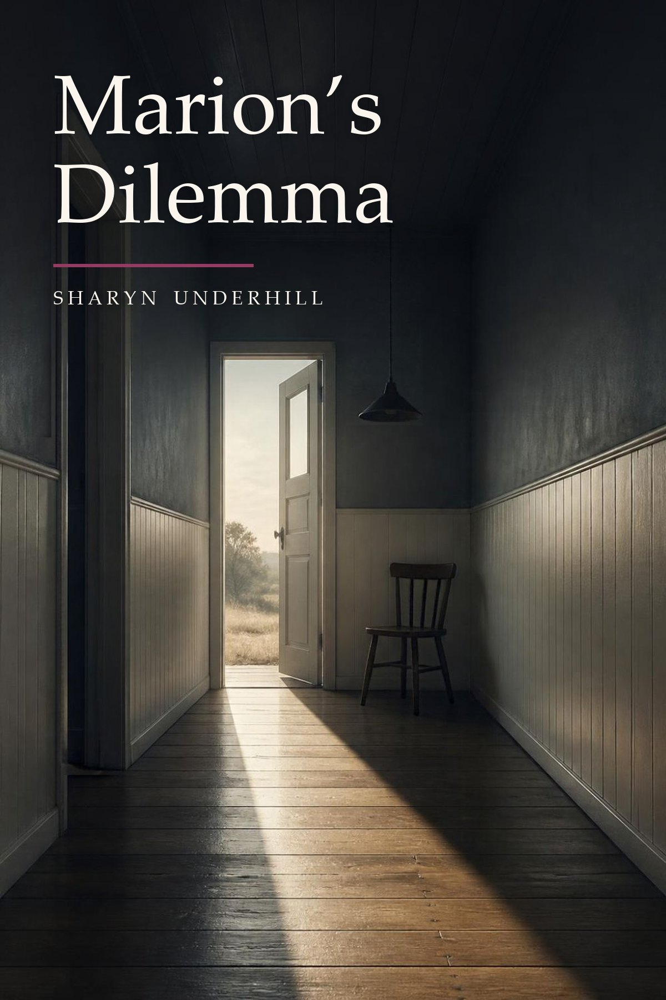

Marion’s Dilemma
Sharyn Underhill
Download EPUB 316 KBDownload PDF 1.2 MB
© 2026 Sharyn Underhill. All rights reserved. Published by the author; underhillnovels.com is the official home of this text.
Chapter 1
Coming off nights
The sixth night was always the one that got her, and this was the sixth.
Marion came out through the staff doors a little after seven and stood for a moment on the ramp, letting the cold work on her face. There had been a frost. The cars in the near row wore it in a thin even coat, and someone had already scraped a porthole in a windscreen and driven off without clearing the rest, which she had always thought was a particular kind of idiocy.
Her ankles had gone again. They did that on the last night, swelling into the tops of her shoes so that walking became a slow negotiation, and she had learned not to look at them until she was home. Her lower back had the hot wire in it. Her mouth tasted of the ward kitchen, that stewed-tea-and-toast taste, and she had a headache sitting behind her right eye which was not quite a headache, more a notice of intent.
Eleven hours. One death, expected, at twenty past three, which she had sat with because the daughter could not get there from Devonport in time and Marion was not going to let him do it in a room by himself. One fall, Mr Dunkley out of bed again looking for a dog that had died in 1994. One cannula she had put in at half past five after two of the younger ones had made a mess of the same arm, and she had done it without saying anything about it, because there was no profit in that and she had been the young one once.
She got into the car. She did not start it immediately. She rarely did, after nights. There was a stretch of about ninety seconds in the driver's seat that belonged to nobody, and she took it.
* * *
The road home ran east, which at that hour meant driving into it.
The light after a night shift was wrong in a way she had never been able to explain to anyone who had not done it. Too clean. Too far along. The world had been up for an hour and had its coat on and was getting into its own car with a travel mug, and she was coming the other way through it with her eyes full of grit, a woman going backwards past all that forward motion.
School bus at the Gleeson's corner. A ute with a dog on the back, standing up to the wind with its ears flattened, perfectly happy. Frost in the paddocks lying in the shadow of every fence post, long blue stripes of it, melting out of the sunlit side.
The flush came on her just past the bridge.
It started under the sternum and went up, and by the time it reached her face she had the window down and the heater off and the cold morning coming in at her, and she drove like that for a kilometre and a half with her shirt sticking to her and her hair at the back of her neck wet through. Three years of this now. The first year she had cried about it twice, both times in the car, both times furious with herself for crying. Now it was simply weather. It arrived, it did what it did, it went, and you were left damp and cold and faintly ashamed in a way that had no reasonable cause.
Nobody tells you, she had said to Bev in the tea room, and Bev, who was sixty-four and had come out the other side, had said: they tell you. You just don't believe it's for you.
By the turn-off she was cold. She put the window up and the heater on and drove the last four minutes with the sun flickering through the gums, on, off, on, off, strobing across the windscreen, and thought about nothing much at all.
* * *
The house was awake.
She could tell from the driveway. Kitchen light on against the morning, which was a habit of his she had given up on thirty years ago, and the back door open, and the wheelbarrow out in the middle of the lawn where it would sit all day.
Alan had the radio going. He was at the sink with his sleeves pushed up, doing the few things from the night before, and he turned when he heard her and said, “There she is,” the way he had said it for most of her adult life.
“There she is,” Marion said.
“Bad one?”
“Long one.”
“Kettle's hot. I've done you an egg if you want it, it's in the pan, it'll want a minute.” He was drying his hands now, moving things off the table that had no business on the table, clearing her a space. “Brigade meeting's at nine but I don't have to go. Shed's got that bloke coming about the lathe. I'll be back by two, two-thirty.”
“Mm.”
“Do you want the egg?”
“In a minute.”
“Only it'll go like rubber if it sits.”
“Alan.”
“Righto,” he said, pleasantly, and turned the gas off under it.
She sat down and got her shoes off, which took some doing, and put her feet flat on the lino because it was cold and that helped. He brought her the tea. He had made it the way she liked it, which he had got right some time in the nineteen-nineties and never got wrong since, and he put it down on the coaster rather than on the wood, and then he stood there.
That was the thing. He stood there.
Not hovering exactly. Not fussing. Just present and slightly inclined towards her, like a man at a counter waiting to be told what the job was, and when she said nothing he went back to the sink and found something else to do that did not need doing.
Marion drank her tea and watched him over the rim of it.
Sixty, and sixty-one next March. Thinner than he had been at forty, which was more than she could say. He had the sleeves up and his forearms were smooth, and had been for years now, and she had long ago stopped having any view about that at all. The first time she had noticed she had thought: well. The second time she had thought: it's his body. The twentieth time she had not thought anything, which was the ordinary fate of most things in a marriage. Toast racks. Snoring. A man's smooth arms.
He wiped the bench. He wiped it a second time, along the same stretch.
“Floors want doing,” he said, to the window.
“They're fine.”
“They're not, though. Through the hall especially.”
“Then do them,” she said, “or don't, I don't mind,” and reached for the paper.
And there it was. The thing she would come back to afterwards, when she went looking for where it started, and would not be able to make sound like anything.
Because he had not asked her about the floors. He had asked her something else, in the only language the two of them had ever used for it, and she had done what she had done for thirty-eight years, which was to answer the question he had actually said out loud and let the other one go past her like a car she had decided not to flag down.
She had been doing that so long it had stopped costing her anything.
She sat there in her uniform with her ankles up on the chair opposite and the sun coming over the gum trees into her eyes. It was not what he wanted that stopped her. She had known what he wanted since about 1991, in the vague unexamined way you know where the fuse box is. What caught her was the other half of it: that every single time, she had handled it. Gently. Kindly. Automatically. The way she handled a patient's relative in a corridor, the way she handled the new graduate with the ruined cannula, the way she handled everything, which was to take it off the person in front of her and carry it somewhere they could not see her put it down.
And she thought, quite calmly, with the tea going cold in her hands:
I have never once asked myself what I wanted to do about it.
The clock on the oven said three minutes past eight. Alan was at the sink with his back to her, wiping the same stretch of bench, waiting to be told.
Marion put the cup down.
“I'll have that egg now,” she said.
✦
Chapter 2
Sunday
She slept badly on the Saturday, which was normal. Coming off nights took her three days and there was nothing to be done about it. She was awake at two and again at four, and got up at half past five because lying there was worse.
Alan slept through all of it. He always had.
She made tea and sat in the dark in the kitchen with her dressing gown on and her hands round the cup, and the thought was still there. It had been there since Friday morning. Not pressing. Just sitting where she had left it, the way a letter sits on the bench when you have read it and not decided what to do.
* * *
They were at church by twenty to ten because Alan did the urn.
He had done the urn for eleven years. It was not a job anybody had given him, exactly. He had started doing it one winter when the woman who used to do it had her hip done, and then he had kept doing it, and now it was his. He filled it, switched it on, put the cups out, checked the milk, and at some point someone had bought a second urn because one was not enough, and he did that one as well.
Marion sat in the car for a minute after he got out, and watched him carry the milk in from the boot.
She had her good coat on, the charcoal one, and underneath it the navy dress that still did up but did not sit the way it used to. She had stopped buying anything with a waist about four years ago. Her hair was wrong — washed on Friday and slept on badly twice — and she had done what she could with it in the car mirror before they left, which was not much.
She had put a bit of foundation on at the house and she could feel where it had settled into the two lines at the side of her mouth. She got a tissue out of her coat pocket and took some of it off.
Bev would say she looked tired. Bev always did. It was meant kindly and it landed the way it always landed.
She got out of the car.
* * *
Inside it was the usual.
Ninety-odd people, most of them known to her for twenty years or more. The Gleesons. The Pattersons with the grandson they were raising. Ron Fitch, who had buried his wife in March and came every week now and sat in the same place she used to sit. Marion had nursed four of the people in that room and could have told you things about all of them that she would never tell anyone.
She found their row. Alan was still at the back with the urn.
“Marion.” Helen Gleeson, sliding in beside her. “You look tired.”
“Nights.”
“I don't know how you do it at our age.”
“Neither do I.”
“Alan's on the urn again.”
“He is.”
“He's good like that,” Helen said. “You've trained him well.”
It was the kind of thing women said and had said to Marion for thirty years, and she had always laughed and said something back, and she did that now, more or less, and Helen turned round to talk to somebody else.
But it sat in her.
You've trained him well. Nobody meant anything by it. It was what you said about a man who carried the milk in, and it was a compliment to the wife and a small joke at the husband, and it had been said at every morning tea in the country for fifty years.
Marion looked at the back of the room, where her husband was setting out cups.
She had not trained him. She had never asked him for any of it. Not the urn, not the floors, not the tea made right since the nineties, not the egg in the pan on a Friday morning. He had simply kept putting things in front of her for thirty-eight years and she had kept saying thank you, and everyone who looked at them saw a well-run marriage and a decent man, and they were not wrong, and that was not what was happening.
She sat through the first two songs without hearing them.
* * *
At morning tea he was behind the trestle with the teapot, and she stood in the middle of the hall with a cup she had not asked for, which had arrived in her hand because he had seen her come out and poured it.
Ron Fitch came over and told her about the garden. He had put in broad beans. He said it twice. She let him, because she had sat with his wife through most of a night in February and he knew it, and this was how he said thank you.
Over his shoulder she watched Alan work the trestle.
He was good at it. He knew who had sugar. He got to the Pattersons' grandson with a biscuit before the boy had to ask, and he got to old Mrs Rydell with her cup half full because full was too heavy for her now, and he never once stood still. He had a way of being at the edge of every group and in none of them, watching to see what wanted doing, and then doing it.
It was the same thing he did in the kitchen. The exact same thing. He had been doing it in public, every Sunday, for eleven years, in front of ninety people, and they all thought it was lovely.
Nobody in that hall would have used the word that was in her head.
She was not sure she would use it either.
“They're in a bit late,” Ron said. “The beans.”
“They'll be right,” said Marion. “They're tougher than people think.”
* * *
In the car going home Alan talked about the lathe.
The bloke had come and looked at it and it was the motor, which he had said all along, and there was a fellow at Bridgewater who rewound them but you had to get it to him. He might ask Trev about the trailer. Or he could take the motor out himself and put it in the boot, it was only four bolts, but then if he got it wrong he would have two problems instead of one.
“Take the trailer,” Marion said.
“Trev might want it Saturday.”
“Take it Friday, then.”
“Righto,” he said, and that was the end of it. He put the indicator on for the turn and drove the rest of the way without saying anything else, perfectly content, the matter settled.
She looked out the window at the paddocks.
It had taken four seconds. She had said take the trailer and he had taken the trailer, and he had been happier after than before. She could not remember the last time she had done that — just decided something, out loud, without wrapping it up in a question first.
She did it in a ward forty hours a week. She did it over people who outranked her and people who were frightened and people who were dying, and she did it so well that it did not look like anything.
At home she asked him if he would mind.
Thirty-eight years of asking a man if he would mind, while he stood at the sink waiting to be told.
“Do you want a cup of tea when we get in?” Alan said.
“Yes,” said Marion.
Not please. Not if you're making one. Just yes.
He did not notice. There was no reason he would have. But she heard it, and it stayed with her all afternoon, and that evening when he asked her whether she wanted the lamb done or the chicken she said the lamb, straight out, and sat down, and let him get on with it.
✦
Chapter 3
Four bolts
Alan got the motor out on the Thursday.
It was four bolts, the way he had said, but the bottom one was seized and took him an hour and a half and most of a can of penetrating oil, and he skinned two knuckles getting at it. He sat on the upturned crate afterwards with his hand wrapped in a rag and looked at the motor sitting on the bench and felt all right about the morning.
The shed was cold. It was always cold until about eleven. He had the little radio going and the door open to the paddock and a cup of tea going skin on the bench beside him, which he would drink anyway.
Trev rang about the trailer and said Friday was fine, and then talked for twenty minutes about his knee.
That was the morning.
* * *
He got in about one and did the floors.
Marion was on a late, so the house was his until three. He did the hall first because the hall was the worst, and then the kitchen, and then the laundry, which did not need it, and he did them properly, on his hands and knees with the bucket, because the mop never got into the edges and he could not stand the edges.
It took him two hours. He was not quick at it any more. His knees had opinions now that they had not had ten years ago, and he had to get up and move about every so often, and getting up was its own performance.
He was wearing her underwear, as he had been for most of nine years.
It had started by accident, or near enough, the way those things do. A pair of hers in the washing basket, a house to himself for a weekend, and the sort of impulse he would not have been able to account for at the time or since. He had put them back. Then he had done it again. For the first two years he was careful about it in a way that took real organisation — his own hidden in the shed, under the offcuts, in an ice-cream container with the lid on.
Then one evening he had got out of the shower and not changed, and come through to the kitchen, and she had looked up and gone back to her book.
That had been that. He bought his own after a while, from a place in Launceston first and then online, and they went through the wash with everything else, and she folded them with everything else, and neither of them had said a single word about it from that day to this.
Nine years. He could not have said what he had wanted her to say. Something. Anything, really. In the first year or two he had made small openings for it, left them lying about, stood where she would have to look, and she had looked, and nothing had come, and after a while he had stopped making the openings and simply gone on.
So he did the floors in them, as he always did, and the back door was open and the dog from next door came and stood in it for a bit and went away again.
He did not mind any of it. He had never been able to get that across to anybody and had long ago stopped wanting to.
There had been a time, years back, when he had tried to find words for it and had got as far as a few sentences in his head, in the car, rehearsing. None of it had ever come out. What would he have said. He liked the house clean. He liked doing it for her. He liked it best when she came in and the floors were done and she did not say anything about them at all, because saying something about them would have made it a job he had done, and it was not that.
It had no name that he was prepared to use. He had looked, once, years ago, on the computer, and shut it again, and felt sick for two days.
So he did the floors on a Thursday and that was that.
* * *
She came in at half past two, an hour before he expected her, while he was still down on the hall floor with the bucket.
He heard the car and did not get up, because getting up took a while now and there was no sense in doing it twice. She came through the front with her bag over her shoulder and her lanyard still on, and stepped over the bucket, and went past him down the hall.
“They sent us home,” she said. “Water's off in the whole wing.”
“Right.”
“They'll have it back by tonight. Somebody put a post through the main.”
She stopped at the end of the hall and looked back. He was sixty years old, on his hands and knees in the middle of his own house in the middle of the afternoon, in nothing but a pair of her knickers, with a bucket of grey water beside him.
“You've missed under the hall stand,” she said.
“I was coming back to it.”
“Mm.”
She went through to the bedroom to get changed. He heard the wardrobe, and the drawer that stuck, and the shower going. He finished the hall, and then he did under the hall stand.
* * *
She came out in her old trousers and the grey jumper and put the kettle on, and said, “Did you get the motor out?”
“Four bolts.”
“How long did it take you?”
“Hour and a half.”
“Mm,” said Marion, and then, “What have you done to your hand?”
“Nothing.”
She took it and turned it over and looked at the knuckles, the way she looked at anything, quickly and without fuss, and let it go again. “Wash it properly.”
“It's right.”
“Wash it properly, Alan.”
He washed it properly.
It was afterwards, with his hands under the tap, that he thought about Sunday.
Something had been different in the car coming home and he had not worked out what. He had gone over it a few times since, the way he went over a motor that was running not quite right — nothing you could point to, just a note in it that was not the usual note. They had talked about the lathe. She had said take the trailer. He had said Trev might want it Saturday and she had said take it Friday, then, and that had been the end of it.
Take it Friday, then.
He stood at the sink with the water running over the split knuckle and felt it go through him again, exactly as it had in the car, and had no idea what to call it either time.
He turned the tap off.
“What do you want for tea?” he said.
“You choose.”
“There's the chops, or I can do the thing with the chicken.”
Marion did not answer for a second. She was standing with her shoes in her hand, looking at the hall floor, which was still faintly damp along the skirting where he had gone round the edges.
“Chops,” she said.
“Righto.”
“And do the beans, not the peas.”
“Righto,” said Alan.
She went through to get changed. He stood in the kitchen for a moment and then got the chops out, and the beans, and put the radio on low, and got on with it.
He had meant to put something on after the floors and had not, and now it was too late to without it being a thing he had done. So he cooked as he was. That was not unusual either. In the colder months he put a jumper on and left it at that, and in summer he did not always bother with the jumper.
At the table she asked him about Trev's knee and he told her, and she said Trev had been told two years ago to get it done and had not, and that was Trev all over. Then she read the paper. He cleared up. He did the dishes and wiped down and put the bin out because it was Thursday, and when he came back in she was still at the table with her reading glasses on and the light on over her, and she looked up at him.
“Sit down,” she said.
He sat down.
“Not there. Here.”
He moved across to the chair she meant, which was the one opposite her, under the light, and sat in it with his hands on his knees. He was still in her knickers and nothing else and had been all day. She went back to the paper.
That was all. She read, and he sat, and after a while she turned the page and said something about the council and the new roundabout, and he said something back, and it was an ordinary Thursday evening in an ordinary kitchen.
Alan went to bed at ten and lay there a long while in the dark, listening to her moving about in the bathroom, and could not have told anybody what had happened to him that day. Nothing had. Four bolts and the floors and a feed of chops.
He was sixty years old and his heart was going like a boy's.
✦
Chapter 4
What she was good at
The water was back on by Friday and she did four days straight.
They were short again. They had been short since March and the agency staff came and went and half of them did not know where anything was kept, and Marion spent a good part of every shift answering questions she should not have had to answer. She did it without complaining because complaining took longer.
On the Saturday she had a bad one. A man of forty-four, off a motorbike, who was not going to die but was going to be a long time coming back, and his wife in the corridor wanting someone to tell her something certain. Marion gave her what she could, which was not certainty. She put her in the little room and got her a tea and sat with her for seven minutes by the clock, and then went back out and got on, because there were twenty-two other people in that ward and all of them were hers.
At some point in the afternoon the registrar wanted to move the man of forty-four to a bed by the window, and Marion said no, and the registrar said he thought it would be better for him, and Marion said, “He's going to be here four weeks. Put him there now and you'll move him twice. Leave him.”
He left him.
She did not think anything about it at the time. She had been doing it for thirty years, several times a day, with doctors and families and orderlies and frightened twenty-three-year-olds, and it did not feel like anything at all. It was just the job.
* * *
Bev caught her in the tea room on the Sunday with her shoes off.
“You right?”
“I'm all right.”
“You've been somewhere else all weekend.”
“Four days, that's all.”
Bev sat down with her own cup and let the silence run, which was one of the reasons Marion liked her. Bev had been in that hospital since 1983 and had a way of leaving a silence open without appearing to.
“When Col retired,” Bev said eventually, “I nearly left him.”
“Did you.”
“Eighteen months of him in the house. I'd had the run of it for thirty years and then there he was, in it, all day, asking me what I was doing.” She blew on her tea. “It wasn't him. He's all right. It was that I'd never once had to say what I wanted, and then suddenly I had to say it about everything, forty times a day, and I found out I didn't know how.”
“What did you do?”
“Learned how,” said Bev. “Took about a year. He thought I'd gone off him.”
“And had you?”
“No. I'd gone on.” Bev got up and rinsed her cup. “You've got what, two years?”
“Two and a bit years.”
“There you are then,” said Bev, and went back out to the floor.
* * *
Two and a bit years.
It was not written down anywhere. She had said it out loud to the super people in February and that had made it a date.
And then there would be the two of them in that house every day, for however long they got.
She had not thought about it properly until Bev said it. She had thought about the money and about whether they would stay on the block or sell, and not at all about the part where she would be in a kitchen with him for twenty years.
She was a long time getting out to the car on the Sunday night.
Four days does something that one does not. Her feet had gone past aching into a dull thickness that she would still have on the Tuesday. There was a patch on her right hip that had been numb since about March and that she had looked up once and then stopped looking up. Her hands were dry and split along the sides of the nails from the gel, which they had been every winter since the gel came in, and she had a cracked thumb that caught on everything.
She sat in the car with her hands in her lap and the keys in them and did not start it for a minute, which she always did, and which she had started doing about two years ago and not before.
Driving home she let herself look at it.
What she saw was this. He would do everything. He would get up first and make the tea and do the floors and the garden and the shopping, and he would ask her what she wanted and then do that, and he would be happy, and he would keep standing in the middle of rooms waiting to be told, and she would keep saying oh, whatever you think, and the two of them would go on like that until one of them died.
Twenty years of being asked a question she had never agreed to answer.
It was the first time she had felt anything like anger about it, and it surprised her, because there was nobody to be angry at. He had never once pushed. That was almost the worst of it. Thirty-eight years and he had never once made her say no, because he had never once properly asked.
* * *
She did nothing about it for ten days.
That was deliberate, in so far as she was deciding anything at all. She went to work and came home and they had their tea and watched the news, and she said please and thank you and whatever you think, and she watched.
And now that she was watching she could not stop seeing it.
It was in every hour of the house. The way he came into a room and stopped just inside the door until she had said something. The way he put a cup down and then stayed near the table. The way he asked, every single night, what she wanted for tea, and then made a suggestion, and then waited — and the small bright thing that came up in him when she said one word instead of three.
Beans, not peas. She had watched his whole afternoon improve on it.
Once, on the Wednesday, she caught herself about to say take your jumper off — for no reason, because the heater was on and he looked hot — and did not say it, and sat with her heart going, appalled at herself.
She did not know what she was doing. She wanted that understood, afterwards, by anyone she might ever have told, although there was nobody she was ever going to tell. She was not planning anything. She was a fifty-eight-year-old charge nurse with swollen ankles and a husband asleep down the hall, sitting in her own lounge room with the news on, finding out that she had been holding something at arm's length for so long that her arm had set that way.
On the tenth day she got home at six and he had done a pie, and he brought it to the table and stood there with the cloth in his hand.
“Sit down and eat it with me,” she said.
He sat down and ate it with her, and talked about the lathe, which was going again, and she listened and said the right things in the right places.
She was not going to do anything about it. She had decided that, somewhere around the fourth or fifth day, without ever putting it into words. It was too late, and they were too old, and it was not her, and he had managed perfectly well for thirty-eight years and would manage for another twenty.
That was Wednesday.
✦
Chapter 5
Nothing much
Nothing much happened for a fortnight, which Alan noticed.
He would not have put it that way. If you had asked him he would have said things were good, and they were. The lathe was going. He got the guard back on it and turned a handle for the Gleesons' gate and it came out well. There was a burn-off at the end of the month and two Thursdays of maintenance at the station, and he went to both.
But he was watching the house, and had been since the night she told him where to sit.
He did not know he was doing it. It came out as small things. He got up earlier. He did the floors twice in one week, which was once more than they needed. He started waiting until she was in the room before he put the kettle on, so that she could say yes or no to it, and when she said oh, whatever, he felt the day go slightly flat and could not have told you why.
He was waiting for her to do it again.
He never got anywhere near thinking it in those words. What he had instead was a kind of weather in him. Three or four days of it and then nothing and then it would come back when she said something short across the kitchen, and all the while the ordinary business of a man of sixty went on over the top — the shed, the brigade, the bins, Trev's knee.
* * *
On the second Sunday she sent him for milk.
“Go and get milk,” she said, from the other room, without putting her head round the door.
He drove eleven kilometres to the roadhouse and eleven back with two litres of milk on the seat beside him and was happy the whole way.
That was the sort of thing it had come to. He knew how it would look. He had known how it would look since he was about thirty-five and had arranged his whole life so that nobody would ever have to look at it, including her, including himself.
* * *
The other thing he was doing, and knew he was doing, was leaving a door open.
Not much of one. He had got out of the habit years ago, after the openings he used to make had all gone past her, but he had started again. He stayed in the kitchen longer than the job needed. He did the floors on the evening she was home instead of the morning she was out. Once he came through from the shower and stood at the end of the bench for most of a minute with nothing in his hands, in nothing but what he had on, and she looked up from the paper and said, “There's a bit in here about the hospital,” and read it out to him.
He said that's no good, is it, and she said no, and that was that.
He went to bed that night and lay there and thought: she is never going to. Thirty-eight years. She is never going to, and that is all right, and I have had a good life.
He believed all three of those things. He had believed them before and would believe them again. It was how he got through, and it worked, and he was not an unhappy man.
* * *
On the Thursday he did a pie, and she came in at six and said sit down and eat it with me, and he did, and he told her about the lathe. She listened properly. She asked about the handle for the gate and whether Gleeson had paid him for the stock, which he had not and would not, and she said that was Gleeson all over.
Then she cleared the plates, which she did not usually do.
He got up to take them off her and she said, “Sit down, Alan.”
He sat down.
She put the plates in the sink and ran the tap and turned it off again without doing anything with them, and stood with her back to him for a moment, and then came and sat in the chair opposite, under the light, and took her glasses off and folded them and put them on the table.
“I want to ask you something,” she said, “and I want you to answer it properly.”
“Right,” said Alan.
“I've known about you for nine years. Longer. I've never said a word about it and neither have you.”
The kitchen clock was the loudest thing in the house.
“Marion—”
“I'm not cross. I've never been cross about it, and I'm not now.” She had her hands flat on the table. “I'm going to ask you once, and then I'll never ask you again, and we can go back to how we were and nothing will be any different.”
He could not get a breath that went all the way down.
“What is it you want?”
He sat there in his own kitchen, sixty years old, with the pie dish still on the bench behind him and the clock going, and he could not say one word.
✦
Chapter 6
Once
He did not answer.
Marion sat and let the silence run, because she had spent thirty years learning that people will fill a silence if you leave it long enough, and because she did not trust herself to say anything else.
The clock went. The fridge came on and went off again.
“I don't know,” he said at last.
“You do.”
“Marion.”
“Say it badly. I don't care how it comes out.”
He was looking at the table. His hands were on the edge of it and the knuckle he had split on the lathe bolt had healed over brown.
“I like doing things for you,” he said.
“I know you do.”
“That's all it is.”
“Alan.”
“I want to please you,” he said, and got up, and took the pie dish off the bench and put it in the sink and ran the water on it, with his back to her. “That's all. That's all it's ever been.”
She watched him stand there with the tap running on a dish that did not need it.
It was true, and that was the worst of it. He was not lying to her and he was not getting out of it either. He meant exactly what he said, and what he said was the top of it, and he had spent forty years not looking underneath.
And she understood, sitting there, that he would never say it. Not tonight. Not if she asked him every week for the rest of their lives. He did not have the words for it and he was not going to go looking for them at sixty.
She had said she would ask once.
“All right,” said Marion.
She picked up her glasses and put them back on and reached for the paper, and after a minute he turned the tap off and dried his hands, and the evening went on the way their evenings went on.
At nine he said he might turn in. She said goodnight. She heard him in the bathroom and then the bed, and she sat on in the kitchen for another hour with the paper open at the same page.
* * *
She was angry for two days.
Not with him. She kept checking, and it was not him. He had done what he always did, and she had known he would before she opened her mouth. You cannot tell a man to swim who has never been in the water.
It was the waste that got her.
Thirty-eight years of it. Two people in one house, neither of them unhappy, both of them careful, and a thing between them that had never once been said out loud.
She thought about the openings he used to make, years ago. She had seen every one of them. She had told herself she was being kind by letting them go past, and she had believed that for a long time. What she had been doing was keeping it where it did not have to be her business. She had done it so well that in the end he stopped trying.
She worked two long days and did not think about anything much, and on the second night she lay awake beside him at one in the morning, hot and then cold, and the thought arrived fully made, the way they do at that hour.
He is never going to ask me.
So either it does not happen, or I do it.
She lay there a while longer. She was fifty-eight years old, she had a bad back and a ward of twenty-two and a husband asleep beside her who had never raised his voice to her in thirty-eight years, and she was lying in the dark working out whether she was the sort of woman who could simply begin.
She got up at ten past two and drank a glass of water at the sink in the dark and went back to bed, and slept.
* * *
On the Saturday morning he was at the sink doing the breakfast things and he said, “I might run the mower over it today. Or I could leave it till next week, it's not long.”
Any other Saturday she would have said whatever you think.
“Do it today,” said Marion.
“Righto.”
“And when you've done the lawn I want the gutters on the north side. You've been saying since Easter.”
He had his hands in the water. He did not turn round.
“Righto,” he said.
“Then come in and have a shower before you sit on anything.”
That was all she said. She did not look at him while she said it and she did not change her voice, and she got her boots on and went out to the car because she had the shopping to do, and she was down the drive and onto the road before she let her hands shake.
She did the shopping. She stood in the aisle at the supermarket for a long time in front of nothing in particular, and bought the wrong size of something, and drove home.
The lawn was done. He was up the ladder at the north side with the gutters half out, and he put his hand up to her as she came past with the bags, the way he had done ten thousand times, and she put her hand up back.
At five he came in and had a shower before he sat on anything.
Nothing was said about any of it, that day or afterwards. There was nothing to say. She had told her husband to mow the lawn and clean the gutters and wash before he sat down, which is a thing any wife in the country might say on a Saturday, and he had done it, and the house was the same house.
But she had started, and they both knew it.
✦
Chapter 7
The gutters
The gutters on the north side were worse than he thought.
Three years of leaves in the top end and a tennis ball he had no explanation for, and the bracket near the corner had come away from the fascia and needed a new screw into fresh timber. He was up and down the ladder most of the afternoon. He got the lot out and ran the hose through and watched it come out the downpipe brown and then clear.
It was a good job. He had been meaning to do it since Easter and now it was done.
He came in at five and had a shower.
He was standing under it with his hands against the tiles when it caught up with him. Not the gutters. What she had said at the sink that morning, and the way she had said it, and the fact that he had been up a ladder for three hours doing a thing he had been putting off for four months because his wife had told him to.
He stood there until the water started to go cold on him.
* * *
It went on like that.
It was not every day and there was no pattern to it that he could find, and he looked for one. Some days she asked him what he thought, the way she always had. Some days she said get the mower serviced, or we're having the fish tonight, or ring your brother, you've been putting it off.
He rang his brother.
What he noticed was how little of it there was. He had expected — he had not expected anything, he had never let himself get as far as expecting — but if he had, it would have been more than this. A dozen words a week. Most of it about the house, the car, the garden, the things that had always needed doing and that he had always done anyway, in his own time, after asking her twice if she minded.
He did them now because she said. That was the only difference. There was nothing in it that anybody could have seen from outside, and there was nothing in it that he could have pointed to if she had turned round one day and said what are you on about, Alan, I asked you to get the mower serviced.
And he could not settle for a fortnight.
* * *
At the shed on the Wednesday he put a chisel through the back of his left hand.
Not far. It was a slip off a piece of blackwood, and it went in at the base of the thumb and he said a word he had not said in front of anyone for years, and Keith came over and looked at it and said that'll want a stitch.
“It won't.”
“Your wife's a nurse.”
“That's why it won't,” said Alan, and the three of them standing round had a laugh about that, and somebody found the first aid kit, which had nothing in it that was not out of date, and he drove home with a tea towel round it.
She was in the kitchen. She took his hand to the window and turned it to the light and looked at it for about four seconds.
“Car,” she said.
“It's nothing.”
“It's through the fascia. Get in the car.”
She drove him in and sat with him for an hour and ten minutes and they put three stitches in it, and the young doctor said he had been lucky with the tendon.
“Yes,” said Marion. “He has.”
In the car going home she said, “You'll keep that dry. I'll do it Tuesday and I'll do it Friday and you'll leave it alone in between.”
“Righto.”
“And you can stay off the lathe.”
“For how long?”
“Until I say.”
He looked out the window at the paddocks going by in the dark with his hand up on his chest, and did not trust himself to answer, and she did not seem to want one.
* * *
She did the dressing twice a week and it was the most ordinary thing in the world. She did it at the kitchen table with the good light on and her glasses down, and she was quick and completely impersonal about it, and she talked about the hospital the whole time.
He sat with his hand out on a folded tea towel and let her get on with it.
He had watched her do this for thirty-eight years to other people. He had never once been the other people.
“Turn it over,” she said.
He turned it over.
“That's healing well. You've kept it dry.”
“You said to.”
“Mm,” said Marion, and cut the tape, and put everything back in the box and the box back in the cupboard above the fridge, and washed her hands.
And that was the evening. The news, and the pie, and the dishes, and at ten past ten she said she was turning in, and he sat on a while longer in the kitchen on his own.
✦
Chapter 8
Getting used to it
What surprised her was how little effort it took.
She had expected to have to work at it. She had lain awake that night at one in the morning thinking about whether she was the sort of woman who could begin, as though beginning were a cliff. It was not a cliff. It was saying do it today instead of whatever you think, and then getting in the car.
After three weeks she had stopped noticing she was doing it.
Not the saying. The stopping noticing.
* * *
She watched herself for a few days, the way she would watch a graduate she was not sure about.
Monday she told him to ring the council about the culvert. Monday night she told him she wanted the chicken. Wednesday she told him he was coming with her to her sister's on the long weekend, which they had been going round for a fortnight, and he said righto and that was the end of a fortnight.
On the Thursday she said nothing at all and he mowed the lawn anyway, and she caught herself being faintly annoyed about it, and had to sit down with that one.
Because he had done that lawn since before the children left and she had never once minded.
She put the kettle on and stood at the window and watched him go up and back in the last of the light.
Three weeks, and she had got used to being the one who said. He had gone and done it without being told and she had felt put out, like a woman who has come in and found somebody in her chair.
She did not stop, though.
* * *
In the ward it came the other way.
She found she was shorter with people. Not rude — she would have known if she were being rude, she had sacked a girl for less — but she had stopped padding things. For thirty years she had said would you mind terribly, and when you get a chance, and I know you're flat out, but. All of that was oil. You put it on so the thing would go in without taking the skin off.
Now she heard herself say, “Bay four needs doing, and then I want you on obs.”
The girl did bay four and then went on obs.
It was in her body before it was anywhere else. She noticed it at the sink outside bay six, washing her hands for about the thirtieth time that shift — the same hands she had been washing for thirty-eight years, with the nails cut back to nothing and the knuckles gone thick and the skin on the backs of them finally starting to look like her mother's. She stood there under the tap and found she was standing square, both feet, shoulders down, the way she had not stood since she was about forty.
She had spent twenty years making herself smaller in corridors. Turning side-on to let people by. Saying sorry to a doctor who had walked into her.
Bev noticed. Of course Bev noticed.
“You've got your voice on,” she said, in the corridor, not stopping.
“What voice.”
“The one you should have had on for twenty years,” said Bev, and went into the linen room.
* * *
The thing she could not work out was what it was doing to him.
He gave her nothing. That was what she had married, more or less — a man who would say righto to the end of the world — and she had thirty-eight years of reading him and she could still not tell.
So she watched for it, and over a few weeks she got a small number of facts.
He had started getting up earlier. He was shaving every day, which he had not done since he finished work on the trucks. The shed was tidier than it had been in a decade. He had gone back to doing the floors on his hands and knees on the days she was home rather than the days she was out, and he had not done that since the children were in the house.
And he was quiet. Not unhappy quiet. She knew his unhappy. This was the other thing, the one she had no name for, where he would be in a room with her and perfectly still, waiting, with the whole of him pointed at her like a dog at a gate.
She found she could put a hand out and move him about the house with four or five words a day.
She was driving in to Hobart on her own when she heard herself say it out loud.
“I could do anything with him.”
She did not say anything else for about fifteen kilometres.
* * *
It was not that she was shocked by it. She had been forty years in a job where you can do anything you like with a person who is frightened and in a bed, and the whole of the job is that you do not.
She went back to that a good deal, those weeks. The ward had rules. There were protocols and sign-offs and a code of conduct in a folder that nobody ever opened. And under all of it there was the job, which was this: you had people in your hands for eleven hours at a time, with nothing on under a gown, and you gave them back at the end of it with everything they came in with. Nobody thanked you. It was what you were for.
In her own kitchen there was no folder.
There was nobody watching, and nothing written down, and a man who would say righto to whatever came out of her mouth, and the only thing between him and her was her.
She thought about that a good deal more than she thought about anything else.
* * *
On the Sunday at church Helen Gleeson said he was looking well.
“He's lost a bit,” Helen said. “Hasn't he? He's lost a bit round the middle.”
Marion looked over at the trestle, where her husband was pouring tea for ninety people, shaved, pressed, upright, cutting about the hall like a man ten years younger.
“He's been busy,” she said.
“Well, it suits him.”
“Yes,” said Marion. “It does.”
She drank her tea. Over by the window Ron Fitch was telling somebody about his broad beans, which were through, and the Pattersons' grandson was being fed biscuits by a man who had got to him before he had to ask.
Nobody in the hall had the first idea.
That should have troubled her more than it did.
✦
Chapter 9
As you normally do
Bev came out on the Sunday after church.
Alan had met her twice in twenty years, at the Christmas do both times, and knew her mostly as a voice on the phone and a name in stories about the ward. She was a big woman with a short grey haircut and she came up the drive in a Corolla with a dint in the door and stood looking at the block for a minute before she came in.
“Well, this is all right,” she said.
He put the kettle on. Marion got the good cups down, which she did not often bother with, and the two of them sat at the table and he brought the tea over and then stood at the end of the bench with the tea towel.
They talked about the hospital for twenty minutes. He listened to the half of it that made sense and did the breakfast things and was perfectly happy.
Then Bev said, “You keep a nice house.”
“That's not me,” said Marion. “That's him.”
“Is it.”
“All of it. He does the floors on his hands and knees. Every week. You could eat off that hall.”
“Col wouldn't know where the bucket lives,” said Bev.
“They're overdue, as it happens,” Marion said. She did not look round at him. She picked up her cup. “Alan, do the floors while we're out the back. We'll have ours on the verandah. Do them as you normally do.”
The two women got up and took their cups out through the laundry door and he heard the chairs go on the boards, and then the two of them talking, and then Bev laughing at something.
He stood in the kitchen with the tea towel in his hand.
* * *
It was the last four words.
Without them it was a job. With them it was not a job and he knew it was not, and he stood there for a good while trying to get some air into the top of his chest.
She had not told him what to do. She had told him to do the thing he always did, in the way he always did it, and she had done it in front of Bev, and now it was his to decide and he could not get out of it in either direction. If he did it dressed, then he had decided that. If he did it the other way, he had decided that.
He got the bucket out from under the laundry trough.
He could hear them through the flywire the whole time, four feet away, Bev going on about her son-in-law and the shed he had built without a permit.
Alan filled the bucket and stood there while it filled and then he went and got undressed.
* * *
He did the hall first, the way he always did.
His hands were not steady for the first ten minutes and then they were, and after that it was only the floor. Once you were down and going, it was only the floor. The bucket and the cloth and the edges and the next bit.
He did the hall and the kitchen and started on the laundry, which put him three feet from the door.
He heard Bev stop talking.
He did not look up. He went on with the edge he was doing, along the skirting under the dryer, and he could feel her looking at him through the flywire, a woman he had met twice in twenty years, and the back of his neck went hot and stayed hot.
Nobody said anything.
After a few seconds Marion said something about her sister's place at Penguin, and Bev said yes, well, and off they went again about Penguin, and he finished the laundry and did under the dryer properly and tipped the bucket out on the garden.
* * *
“Alan.”
He came to the door.
“Bring another coffee for Bev and something to eat. There's the slice in the red tin.”
There was a second where he could have gone and put his trousers on. He knew it at the time and he knew it afterwards. She had sent him to the kitchen and she had not said a word about what he was wearing, and the kitchen had his clothes in it, over the chair, where he had left them.
He made the coffee and cut the slice and put it on a plate with a knife, and carried the lot out to the verandah as he was.
Bev looked at him.
She looked for about two seconds. Her eyebrows went up a little. Then she took the coffee off the tray and said, “Lovely, thank you,” and turned back to Marion and said, “So when's she due?”
“End of August.”
“She'll be glad to see the back of it.”
“She will.”
Alan put the plate down on the little table between them. Marion took a piece of the slice and did not look at him, and he stood there a moment longer in case there was anything else, and there was not, so he went back in.
He washed up the good cups by hand and put them away in the top cupboard.
Through the flywire he could hear the two of them talking about the daughter and the baby and then about somebody at work who was going to be told to pull her head in, and at no point in the next hour and a half did either of them say one word about him, and he could not have said what he wanted them to say.
* * *
Bev left at four. He heard the Corolla go down the drive.
Marion brought the cups in and put them in the sink and said, “Those floors have come up well.”
“They were bad in the hall.”
“Mm,” she said. “She's coming out again in a fortnight.”
“Righto,” said Alan.
✦
Chapter 10
The verandah
She had not planned it.
That was what she told herself on the Sunday night, standing at the sink with the good cups. She had not sat down and worked it out. Bev had said you keep a nice house, and Marion had opened her mouth and heard what came out of it, and by then she was already saying the next thing.
Do them as you normally do.
She had got as far as the verandah before her chest caught up with her.
* * *
Bev talked about her son-in-law and the shed with no permit, and Marion said the right things in the right places and did not hear a word of it.
She was listening to the house.
The tap. A long wait. The bucket going into the trough and out again. Then the small sounds of a man getting undressed in his own laundry, which she could not have described to anyone and which she heard perfectly clearly, and then nothing for a bit, and then the cloth.
She put her cup down because her hand was not level.
“You right?” said Bev.
“Long week.”
“You've had about forty of them,” said Bev, and went on about the shed.
* * *
When he got to the laundry door she saw Bev see him.
It was a good deal worse than she had expected, and she had not expected anything, because she had not let herself get that far. Her husband. Sixty years old, on his hands and knees three feet away through the flywire, in nothing but a pair of her knickers, doing the edge along the skirting with his head down.
Bev stopped mid-sentence.
Marion did not look at the doorway. She looked at the garden, at the two apple trees her father had put in forty years ago, and she said something about her sister's place at Penguin, and after what felt like a long time Bev said yes, well, and took it up.
Two women in their late fifties on a verandah, talking about Penguin.
She has known me since 1983, Marion thought. She will never say a word about this, not today and not ever, and I have just put her in a position in her own friend's house, and I did not ask her.
That was the first thing she felt properly ashamed of.
Not him. Her.
* * *
And then she made it worse, and knew she was making it worse while she did it.
“Alan. Bring another coffee for Bev and something to eat. There's the slice in the red tin.”
His clothes were over the chair in the kitchen. She knew exactly where they were, because she had watched him leave them there, and when she said it she did not say come in and get dressed first and she did not say the other thing either.
She sat on the verandah and waited to find out which way her husband would come out.
It took him four or five minutes. Long enough for the kettle. Long enough for a man to put his trousers on twice over if he had wanted to.
He came out with the tray.
“Lovely, thank you,” said Bev, and took her cup, and asked about the baby.
Marion took a piece of slice. She did not look at him and she did not thank him, and he stood there a second longer with the tray in case there was anything else, and then went back in.
She heard him washing the good cups by hand.
* * *
They talked for another hour and a half and neither of them mentioned it.
About four, Bev got her keys out and said, “Right,” and stood up, and the two of them went down the steps together to the Corolla. Bev opened the door and put her bag on the seat and then stopped with her hand on the roof.
“Is he all right?”
“He's happier than he's been in ten years.”
“That's not what I asked.”
“I know it isn't.”
Bev looked at her over the top of the car for a while. Somewhere behind the house a currawong was going.
“Are you all right?” she said.
“I don't know,” said Marion.
“No.” Bev got in and pulled the door to and put the window down. “Col's got his fishing and I've got my sister and that's about the size of it. Thirty-one years. There's worse ways to go on.” She started the car. “I'll come out in a fortnight. Don't put him through that again on my account.”
“Bev—”
“Marion.” Bev put it in gear. “I've worked that ward with you for twenty-three years. You've never once done a thing you hadn't decided to do.”
And she went off down the drive with her arm out the window.
* * *
Marion stood at the top of the drive until the dust had settled.
Then she went in and told him the floors had come up well, and that Bev was coming out again in a fortnight, and he said righto and got the tea on.
She sat at the table and watched him move about her kitchen, shaved, clean, sixty, dressed again now, perfectly content, and she thought about what Bev had said at the car with her arm out the window.
It was true. She had decided. She had decided on the verandah with the cup in her hand, and she had been telling herself ever since that it had come out of her mouth on its own.
“Peas or beans?” said Alan.
“Beans,” said Marion.
✦
Chapter 11
A fortnight
He thought about it for a fortnight.
Not in words. He would be halfway through a job and find he had stopped, with the spanner still on the nut, and have to start again. He burnt a batch of sausages at the brigade barbecue and Keith gave him a hard time about it for the rest of the night.
What he kept coming back to was that nobody had said anything.
He had been got at about things his whole life. The blokes at the depot, forty years of it, over a haircut or a new ute or a wife who earned more than you did. That was how men told you they had seen something. If a thing was noticed, it was said, and if it was said it was a joke, and once it was a joke it was over.
Bev had looked at him for two seconds and asked about a baby.
He did not know what to do with that. It sat in him for two weeks and would not go anywhere.
* * *
On the Wednesday Marion said, “Bev's coming Sunday after church. She'll stop for tea.”
“Righto.”
“Do a roast.”
“Lamb?”
“Lamb,” she said. “And get the back lawn done Saturday so it's not hanging over you.”
That was all she said about it, then or at any point in the next four days. He waited the whole time for the rest of it and the rest of it never came.
By the Saturday he understood that she was not going to tell him, and that he would have to decide again, and that she had worked out he would.
* * *
Sunday he had the lamb in before they left for church and it was ready at one.
He was dressed. He had thought about it on and off since Wednesday and in the end he had stood in the bedroom on Sunday morning and put his good trousers on and a clean shirt, because Bev was a guest and there was a roast, and his mother would have come out of the ground.
Marion made no remark about that either.
He carved. Bev had two helpings and said so twice, and said the lamb was better than the pub at Campania, and asked him how he did the potatoes, and he told her about the goose fat, and she said Col wouldn't know a potato from a house brick.
They had a good afternoon. Bev was funny, and loud, and she talked to him as much as she talked to Marion, and at one point she said, “You want to tell her to stop going back for the extra shifts, she'll be no good to anybody,” and Marion said, “He can tell me what he likes,” and Bev laughed.
He washed up. The two of them went out to the verandah with the pot of tea.
He had the kitchen done by half past three and then there was nothing left to do, so he stood at the bench and dried a tray that was already dry and listened to them through the flywire.
* * *
“Alan.”
He went out.
“Sit down,” Marion said. “There's tea in the pot.”
There was a third chair out, which there had not been at one o'clock. Somebody had brought it out from the kitchen.
He sat down and poured himself a cup and the three of them sat on the verandah in the sun. Bev was talking about her daughter and the baby and whether they would get down for Christmas, and the flight prices, and what her son-in-law had said about the flight prices, and Marion said something and Bev said something back.
Nobody asked him anything for twenty minutes and nobody needed to.
He sat in the sun with his tea and the two apple trees in front of him and a magpie going on the fence, and he felt as peaceful as he had felt in a long time.
It got at him afterwards, lying in bed that night.
He had been all keyed up about Sunday for a fortnight and what had happened on Sunday was a roast and a cup of tea on the verandah with his wife and her friend. And it had been good. It had been one of the best afternoons he could remember, and there was no reason for it to have been, and he could not get at why.
* * *
At the car Bev shook his hand, which nobody had done at that house in twenty years.
“That was a lovely lunch,” she said. “You can do that again.”
“Any time.”
“I'll hold you to it.” She got in and started the car. Then she put her head out the window. “Alan.”
“Yes.”
“She's run off her feet. They've got her doing a roster she's got no business doing at her age and she won't say no to any of it.” Bev had her arm out along the door. “You keep an eye on her.”
“I do.”
“I know you do,” said Bev. “Keep doing it.”
And she went down the drive.
Alan stood at the top of it with his hands in his pockets until the dust had gone, and then went in and put the kettle on, because his wife had been on her feet since six and would want one.
✦
Chapter 12
The drawer
She bought new underwear in July because her own was finished.
It had been finished for years. She had been wearing the same eight or nine pairs for years, washing them to death, and the elastic had gone in most of them and two had holes she had looked at and put back in the drawer. That was what happened. You bought things for everybody else and you wore out what you had.
She went in on a Thursday after a late finish and spent two hours at it, which was an hour and three-quarters longer than she had intended.
The woman in the shop put a tape round her and told her she had been wearing the wrong back size since probably her forties, which Marion had half known and never done anything about. Then she kept coming back to the curtain with another one over her arm.
It went on the best part of an hour. The cubicle was hot and the light came from directly above, which is the worst place for it. Her own bra had left two red grooves under her and a line across her back that was still there when she put the last one on. One of them dug in at the side and she said so. One of them she could not get the hook done up on behind her and had to do it round the front and turn it, which she had been doing since she was fourteen and had not thought about since.
At some point she stopped avoiding the mirror and looked.
She did not do anything about what she saw. She stood there a moment and then got on with it, which was more than she usually managed.
She bought three bras and two packets of briefs, cotton, high-waisted, in black and navy and grey. Sensible. Comfortable. Not cheap, either, which took a bit of getting over.
In the car park she sat for a minute with the bags on the passenger seat and felt better than she had felt in months, and could not have told you why.
* * *
The old ones were still in the drawer when she got home.
She took them out to sort for rags, which was what she had always done with them, and stood there at the end of the bed with the lot of them in her hands.
There were fourteen pairs. Four were past anything. The rest had years in them yet if you were not fussy — a bit slack in the leg, a bit gone at the waist, perfectly serviceable.
She put the four in the bin.
Then she took the other ten and went down the hall to his room, which was not his room, it was the spare room where his chest of drawers had ended up when they got the new wardrobe in 1998, and she opened the second drawer.
His were all in there, folded. He folded them. Nine years of ordering his own from a place on the internet and keeping them folded in a drawer in the spare room like a man with a stamp collection.
Marion took the lot out and put them in a supermarket bag.
She put her ten in the drawer instead, folded, and shut it, and took the bag out to the car and put it in the boot under the picnic rug, and the next day on her way in she dropped it at the charity bin behind the supermarket.
She did not say anything to him about it and she never did.
* * *
She was in the kitchen on the Saturday morning when he came in.
He stood in the doorway for a second. She was doing the crossword with her tea and she did not look up.
“Marion.”
“Mm.”
“There's—” He stopped. “My drawer.”
“I've put mine in it,” she said. “I got new ones. There's no sense throwing good ones out.”
He stood there.
“They'll be big on you,” she said. “You'll manage.”
She filled in two more clues. When she looked up he had gone, and she heard the drawer in the spare room go, and then the bathroom door, and then nothing.
He came out twenty minutes later in the pink pair.
They had been hers since about 2009. She had worn them under her uniform through two winters and a daughter's wedding and they had gone slack across the back years ago, and she knew the exact state of the elastic because she had been the one wearing it.
He got the pan out and asked her whether she wanted the bacon or the eggs.
“Eggs,” she said.
She watched him over the top of the paper. He stood at the stove with his back to her and did the eggs the way he always did them, and the kitchen smelled of butter, and the radio was on low, and she sat at her own table in her own house and looked at her husband of thirty-eight years cooking her breakfast in a pair of her old knickers.
She did not say one word about it.
He brought them over and put the plate down in front of her and went back for the tea, and she picked up her fork and did another clue.
* * *
They were too big. She could see it that evening.
He was at the bench doing the washing-up and he put his hand down and pulled at them, the way you would hitch a pair of work trousers, and went on with the plate he had. He did it again a few minutes later.
She watched him from the table.
She had got him in the wrong size on purpose, and she had not known that she had until she sat there watching him hitch them up, and then she knew it, and sat with it.
Because she could have bought him some. It would have taken four minutes in the same shop. She had stood in that shop for two hours with her own in her hands and it had not once crossed her mind to get him anything, and that was not an oversight, and she had been a nurse too long to lie to herself about much.
He was not to have anything chosen for him.
He was to have what she had finished with.
“Alan.”
“Yes.”
“Are they all right?”
He had his hands in the water. He did not turn round.
“They're good,” he said.
“They're too big.”
“They're good, Marion.”
“Mm,” said Marion, and went back to the paper, and left it there.
✦
Chapter 13
The pink pair
What he could not get over was that she had folded them.
He had opened the drawer on the Saturday morning expecting his own and found ten pairs of hers, folded the way she folded things, in a stack, with the pink one on top.
His had gone. He did not ask where. He went and stood in the bathroom for a while with the door shut and got himself sorted out, and then he came back and took the pink one off the top because it was on top.
They did not fit. He had known they would not before he put them on.
She was a bigger woman than he was and always had been, across the hips especially, and the pink pair had been through the wash about four hundred times. They sat wrong at the back and the waist did not grip and by nine o'clock that morning he had got into the habit of putting his hand down and hitching them, the way he would a pair of overalls with the braces gone.
He wore them all weekend.
* * *
He had to go into town for a part that week, and he stood in the spare room for a long while.
In the end he wore the navy ones, because they were the best of a bad lot and because they were plain, and he put his jeans on over them and drove in and bought a bearing for the slasher and had a pie at the bakery and came home.
Nothing happened. Nothing was ever going to happen. Nobody at the counter at the bearing place was going to know, any more than they had known for the last nine years.
It was not the same thing and he knew it was not.
For nine years he had been wearing something he had chosen, which he had paid for out of his own account, which arrived in a bag with his name on it. Now he was wearing something his wife had worn out and put in a drawer for him, and he had no others, and he had not asked for that and had not agreed to it and could not do a thing about it.
He bought the bearing and drove home the long way, round by the river, for no reason at all.
* * *
The doctor was in August.
It was only the yearly one. Bloods, blood pressure, the skin on his forearms from forty years of a truck window, and the other thing that men of sixty get looked at for, which Marion had been on at him about since Easter.
He thought about it for ten days.
In the end it was simple enough, because there was nothing in the drawer but hers and no shop between the house and the surgery where a man could buy anything without it being a trip he had made on purpose. He put the navy ones on. They were the plainest.
Dr Ferris was about forty and had a cold and was running thirty-five minutes late. He did the blood pressure and wrote the form for the bloods and looked at Alan's forearms and said he wanted a photograph of one on the left and would get the nurse to do it. Then he said right, and Alan got his trousers down, and Dr Ferris did what he had to do with his mind on the next patient and said everything was where it ought to be, and Alan got his trousers up again.
The man never looked. Or he looked and it did not register, or it registered and he had seen three thousand stranger things in a surgery and it went nowhere.
Alan paid at the desk and drove home with his hands shaking on the wheel.
He could not have said whether it was from getting away with it or from the other thing, which was that there had never been anything to get away with. He was sixty years old. A doctor with a cold had not cared what he had on, and the whole business had lasted four minutes, and he had carried it around for ten days like a man with a summons in his pocket.
He did not tell her about the ten days. He told her the bloods were booked and everything was where it ought to be, and she said good, and that she wanted to see the results when they came.
* * *
On the Sunday, Ferris was at church.
He had been coming since about March, with a wife and two girls under ten, and sat four rows back on the left. Alan had poured him a cup of tea most weeks since autumn and had never once thought about it.
He thought about it that morning, at the trestle, with the urn going.
Ferris came up with the younger girl hanging off his arm and said, “Morning, Alan. White, no sugar.”
“Coming up.”
“Those bloods'll be back Wednesday or so. I'll ring you if there's anything in them.”
“Righto.”
“There won't be,” said Ferris, and took his tea, and went off to find his wife.
Alan poured for the next one in the queue, and the next, and got a biscuit to the Pattersons' grandson before the boy had to ask.
Four rows back on the left, every week, for the rest of his life. A man who had seen it and not seen it, who would go on saying white, no sugar until one of them moved away or died.
* * *
By September he had stopped thinking about it most days.
He turned that over in the shed a fair bit. For nine years it had been the biggest thing in his life and he had built his whole existence round keeping it quiet. A woman had done a job lot of washing and taken it off him in an afternoon, and now it was only what was in the drawer.
And she had never said he had to. Not once. She had not said you will wear these and nothing else. She had put them in a drawer and said there's no sense throwing good ones out, and there was nothing else in the house.
He could have driven into Hobart any day of the week and bought himself a packet of whatever he liked.
He thought about that quite a lot and never did it.
* * *
One evening in September he was cooking and she came in from a late and sat down at the table with her shoes off.
“That pink pair are no good,” she said.
He had his hand down the back of them at the time.
“They're all right.”
“They're round your knees half the day. The elastic's been gone in those since before your father died.”
“They do.”
“Mm,” said Marion.
She did not say throw them out and she did not say I'll get you some others.
He turned the chops and got the beans on, and she sat there with the paper and her feet up on the other chair, and neither of them said anything else about it.
✦
Chapter 14
No use to you
Bev came out on the first warm Sunday in October and stayed the afternoon.
It had become a thing by then, every two or three weeks, and the pattern of it was fixed: church, a roast, the two of them on the verandah with the pot of tea, Alan in and out with whatever was wanted. Col never came. Col had his fishing.
Marion had stopped thinking of it as a performance. Somewhere around the third visit it had turned into the ordinary shape of a Sunday.
* * *
He had the pink pair on.
She saw it when he brought the first pot out and she thought, those again, and said nothing.
They were worse than they had been in September. He had been wearing them two or three days a week since July and the wash had finished what was left of the elastic, and they sat on him now with no grip at all. He had a way of managing it that he probably did not know he had: a hitch with the back of the wrist if his hands were full, a proper pull with the thumb if they were not, every few minutes, all afternoon.
She watched him do it eleven or twelve times before three o'clock.
Bev watched him do it too. Marion knew that without looking, the way you know where everybody is in a ward.
They talked about the roster and about Bev's daughter, who had had the baby in August and was not coping, and about whether Bev should go up for a fortnight and whether her son-in-law would take it the wrong way. Alan brought the second pot. He put it down and hitched them with his wrist and went back in.
“He'll have those round his ankles,” said Bev.
She said it the way she would have said it about a man's trousers on a building site. Not unkindly. Not making anything of it.
“He will,” said Marion.
“Why's he wearing them, then?”
“Because they're what he's got.”
Bev looked at her over the top of her cup for a second, and then out at the apple trees, and left it alone. She had a way of leaving a thing exactly where it was while making it perfectly clear she had seen it. Twenty-three years of that.
* * *
At four he came out with the slice and a fresh cup for Bev.
He had both hands on the tray.
Marion watched them go as he came through the door — not all the way, but down, over the hip, the waistband turning itself inside out the way slack elastic does — and she watched him stop in the middle of the verandah with a full cup in each hand and nothing he could do about it.
He stood there.
She let it run two or three seconds, which was long enough.
“Put the tray down,” she said.
He put the tray down on the little table.
“Step out of them. They're no use to you.”
He did not look at Bev and he did not look at Marion. He put one hand on the back of the spare chair and stepped out of them, left foot then right, and picked them up off the boards.
“Bin,” said Marion. “Not the wash.”
“Righto.”
“And bring the sugar, she's been asking for ten minutes.”
He went in. The flywire door banged.
“I haven't been asking for ten minutes,” said Bev.
“No.”
“Right.”
The two of them sat there. Somewhere down the back the magpies were going at something.
“He's shaved,” Bev said. “All of it.”
“Years.”
“Right,” said Bev again, and took a piece of the slice, and said, “She's talking about going back to work in January. Eighteen weeks. I said to her, who's having him, and she said day care, and I said at eighteen weeks, and she put the phone down on me.”
“She'll ring back.”
“She always does.”
Alan came out with the sugar.
“Thank you, love,” said Bev, and took it off him, and went on about her daughter.
He stood at the end of the verandah for a moment in case there was anything else. There was not. He went back in and they heard the tap go and then the dishes.
He did not put anything on, and nobody had told him he could not, and he stayed as he was for the rest of the afternoon and all through tea.
* * *
Bev left at seven.
Marion walked her down to the Corolla in the last of the light. The air had gone cool and there was a smell of cut grass from somewhere over at Gleesons'.
“That was a good bit of lamb,” said Bev.
“He does it well.”
Bev put her bag on the seat. Then she straightened up and put her hand on the roof of the car, which Marion had learned meant she was going to say something.
“You didn't buy him any.”
“What?”
“When you got yours. You didn't buy him any.” Bev was looking at the house, not at her. “And you've known those pink ones were done since before you put them in the drawer.”
Marion did not say anything.
“I'm not having a go,” said Bev. “He's a grown man and he'd walk into the sea for you and I've never seen him happier. I'm saying you knew.”
“I knew.”
“All right then.” Bev opened the door. “That's all I wanted.”
“Why?”
Bev stopped with one foot in the car.
“Because the ones who don't know are the ones you've got to worry about,” she said. “I've seen a few of those. Sisters, mostly. Ran a ward for thirty years and never once thought about what they were doing.”
She got in and shut the door and put the window down.
“Three weeks?”
“Three weeks.”
Bev put her hand out through the window and Marion took it, and then Bev pulled her down and kissed her, once, on the mouth.
It was over in a second. Bev let go of her hand and put the car in gear.
“Get some sleep,” she said. “You look shocking.”
“Thanks very much.”
“Any time,” said Bev, and went off down the drive with her arm out the window.
Marion stood at the top of the drive until the tail-lights had gone round the bend, with her fingers at her mouth, and then she took them away again.
* * *
She went back up to the house.
He was at the sink, still as he was, doing the roasting dish with the steel wool, and the kitchen was warm and smelled of lamb fat and the radio was on low.
She stood in the doorway a moment and looked at her husband.
“Leave that and sit down,” she said. “You've been on your feet since six.”
“It'll only harden on.”
“It'll keep.”
He left it, and dried his hands, and sat down at the table. She got two glasses and what was left of the wine Bev had brought, and poured them both one, and sat down opposite him, and the two of them sat there in the kitchen in the quiet.
“She's good company,” said Alan.
“She is.”
“Did she say about her daughter?”
“Going back in January. Bev thinks it's too soon.”
“It is too soon.”
“It is,” said Marion, “but it won't be Bev that decides it.”
They finished the wine and he did the roasting dish after all, and she went to bed, and at some point after eleven she heard him come to bed.
✦
Chapter 15
The Bridge
“Get changed,” she said. “We're going out.”
It was a Wednesday in November, about half past five, and he had the mince out on the bench and the onions already done.
“Where?”
“The Bridge. I rang them.”
“What about the mince?”
“Put it in the fridge,” said Marion, going past him to the bedroom. “Wear the blue shirt.”
He put the mince in the fridge and went and got the blue shirt.
* * *
They had been going to the Bridge for thirty years. It was a pub on the corner with a dining room out the back and a carpet from 1987 and a specials board that had not changed since Dennis took it over. You went there for a steak or the fish.
It was half full. School holidays had not started. Dennis's girl came over with the menus and said good evening and did they want a drink to start.
“Two glasses of the house red,” said Marion, “and we'll order now. He'll have the fish, no chips, salad instead, and I'll have the scotch fillet, medium rare, with the vegetables.”
“Lovely,” said the girl, writing. “Any sauces?”
“Pepper on mine. Nothing on his.”
“Won't be long.”
She took the menus away. Alan's had not been open.
He sat there with his hands in his lap and looked at the specials board for a good while, and Marion got her glasses out and looked at the wine list that had already been dealt with.
“I'd have had the chips,” he said.
“I know you would.”
“Right.”
“Your cholesterol was up and you know it was. Ferris said so and you told me he said so.”
“He did.”
“Well, then,” said Marion.
And that was the end of it, and it was true, and the chips were gone.
* * *
He sat there with his glass of red and tried to work out what had actually happened, and could not find anything.
His wife had ordered for him in a pub. Women had been doing that for men for a hundred years and men had been doing it for women for longer, and if you had asked anybody in that dining room they would not have been able to tell you a single thing was out of the ordinary. Dennis's girl had not blinked. She had written it down and said lovely.
He was in his good blue shirt with his hair wet-combed, which he had done without being told, and underneath it he had on a pair of his wife's navy briefs, which were loose on him, and he was eating fish he had not chosen with no chips because his cholesterol was up.
And he was so happy he could hardly hold the glass.
He had given up trying to put words to it about 1990 and would not have tried now at gunpoint. There was nothing to point at. There was no moment. There was a woman with reading glasses on telling a girl with a pad that he would have the fish.
* * *
Halfway through the main, Ray Gleeson came past the table on his way to the bar and stopped.
“Marion. Alan.”
“Ray.”
“You're out on a school night.”
“She felt like it,” said Alan.
“Good on her.” Ray put his hand on the back of the spare chair. “Did you get that slasher going?”
“Bearing. Hundred and ten dollars and twenty minutes.”
“They see you coming.”
“They do.”
“Helen wants to know about the Christmas do,” Ray said to Marion. “Whether you're doing the hall again.”
“Tell her yes. Tell her I'll want three tables and the urn.”
“She'll be pleased.” Ray knocked twice on the back of the chair. “Enjoy your tea.”
And off he went to the bar.
Alan watched him go. Ray Gleeson had known him since they were nineteen. There was a weekend in Launceston in 1975 that the pair of them still did not talk about.
“He hasn't got the first idea,” Alan said.
“No.”
“Nobody has.”
“Bev has,” said Marion. “Ferris has, probably, if he ever thought about it, and he doesn't.” She cut a piece of steak. “Does it bother you?”
He thought about that for a good while, which she let him do.
“No,” he said.
“Would you want them to know?”
“God, no.”
“No,” said Marion, “I didn't think you would,” and went back to her steak, and that was as near as the two of them had come to talking about any of it since the night in the kitchen in June.
* * *
She had the sticky date. He did not, because she did not order him one, and she did not ask him whether he wanted one, and he sat and had his coffee and watched her eat it.
“That's a good pudding,” she said.
“Is it.”
“It is.”
She paid. She had been paying for things since about 1994, when she went up a grade and he came off the long runs. The girl brought the machine over to her side of the table without having to be told.
In the car park she gave him the keys.
“You've had one glass,” she said. “I've had two.”
He drove them home the eleven kilometres with his wife asleep in the passenger seat before they were past the bridge, and her head over against the window, and her hands in her lap, and he went slow over the cattle grid at the turn-off so as not to wake her.
✦
Chapter 16
Three weeks
They were better at work after that.
Marion could not have said when it started. Some time in the spring the two of them got easy with each other in a way they had not been in twenty-three years of working the same floor. They took their breaks together. Bev started waiting for her at the lifts.
“He's shaved everything, hasn't he,” Bev said one afternoon in the tea room.
“Years.”
“It's a nice look on him. I'll say that.” Bev was eating a sandwich out of a bag. “Col's got hair coming out of his ears and he won't do a thing about it. Thirty-one years I've been at him about his ears. He's got hair coming out of his ears and he won't have the dog in the house because it smells.”
Marion laughed properly, in a way she had not in a long time, and had to put her cup down.
“It's not funny.”
“It is a bit.”
“It's not,” said Bev. “You've got one that turns himself out. Do you know what you've got? I've worked with women for forty years and I've heard every one of them complain, and not one of them had one of those.”
“I know what I've got.”
“Mm,” said Bev, and screwed up the bag, and went back to the floor.
* * *
Three weeks later she was coming, and Marion got the house ready the day before.
She stood in the lounge room at ten in the morning, looking at the cushions.
“Do the windows in here,” she said.
“They're right.”
“They're marked. Do the windows, and the fan, and get the good tablecloth out of the bottom drawer, the cream one.”
“For Bev?”
“Yes, for Bev,” said Marion. “And there's a hair in your ear, the left one. Deal with that. And shave properly tomorrow, all of it, not just what shows. She said something.”
Alan stopped with the cloth in his hand.
“She said something?”
“She said it was a nice look on you.”
He had no answer to that. He went and got the vinegar and the newspaper and did the windows in the lounge room, and then he did the ones in the hall as well, which nobody had asked him to do.
Marion went out to the garden and cut flowers for the table, which she had not done since her mother died.
* * *
She was out on the step before the Corolla had stopped.
“You're early.”
“I left before the second hymn,” said Bev, getting out. “I've heard it.”
She had a bottle of wine in one hand and her bag in the other and she came up the steps, and Marion took the wine off her and then took her hand, and the two of them went into the house like that.
Alan was in the kitchen with the lamb already in.
“Morning, Bev.”
“Morning, love.”
“He's not wearing anything,” Marion said. “I told him not to bother. It's going to be thirty-one today.”
“It is too,” said Bev. “Is that lamb?”
“Half twelve,” said Alan.
“Good man.”
And the two women went out to the verandah with the pot of tea, and that was all that was said about it.
* * *
They sat at the table under the fan for the afternoon because it got too hot on the verandah by one.
Marion noticed her own hands.
She was fifty-eight years old and she had never in her life thought about where her hands were, and now she knew exactly: on the table, four inches from Bev's, and then under Bev's when Bev put hers down on top to make a point about the roster, and then on top of Bev's a while after that, and neither of them doing anything about it or mentioning it or moving.
They talked about the baby, and the daughter, who had rung back. They talked about Col's ears. Bev got going about a surgeon she had reported in 2004 and what had come of it, which was nothing, and Marion heard the whole story for the first time.
Alan carved at the bench and brought it over and they ate with the fan going.
He ate with them. That had started a few visits back and nobody had decided it.
* * *
About three she got up to get the second bottle out of the fridge.
Bev caught her hand as she went past the end of the table and did not let go of it, and Marion stopped, and Bev pulled her down and kissed her.
It was not like the car.
It went on long enough for Marion to put her free hand on the back of Bev's chair, and then on Bev's shoulder, and at some point she stopped thinking about the wine in the fridge and about the fan and about any of it.
When she straightened up, Alan was standing at the sink with a plate in his hand.
He was not doing anything with it. He had been coming back from the table and had stopped, and he was looking at the two of them, and he had nothing on, and there was no question at all about what he was feeling, because there was nowhere for it to go.
He went red from the chest up.
Bev opened her mouth.
“Leave him,” said Marion.
Alan turned round and put the plate in the sink and ran the water.
“I wasn't going to say anything,” said Bev.
“You were.”
“I was,” said Bev, and picked up her glass. “Are you getting that wine or not?”
Marion got the wine.
She stood in front of the open fridge for a few seconds longer than she needed to, with the cold coming out at her, and her mouth was still going and her hands were not steady, and behind her at the sink her husband was washing a plate that was already clean.
* * *
They sat on until six.
Nothing else happened and nobody said another word about it. Bev went back to the surgeon from 2004, and then on to her son-in-law, and Alan did the dishes and dried them and put them away, and came and sat back down at the table with them, and the three of them finished the second bottle between them in the heat with the fan going.
Lying awake at two with the window open, Marion could not get past how good an afternoon it had been.
* * *
At the car Bev put her bag on the seat and then turned round, and there was none of the business with the hand on the roof this time.
She took Marion's face in both hands.
It went on a while. It was nearly seven and the light was still good, and anybody coming along the road would have seen the pair of them. She thought about that at two in the morning. She did not think about it once in the driveway.
“Right,” said Bev eventually, and got in, and started the car. Her face was blotched up the neck.
“Bev.”
“Don't,” said Bev. “Not in a driveway. Not at our age.”
“When, then?”
Bev sat with her hands on the wheel and looked straight ahead down the drive for a long moment.
“Three weeks,” she said, and went.
✦
Chapter 17
Half an hour
They got their breaks together on the Monday, which did not often happen, and Bev said let's get out of the building.
They walked down to the bench by the car park with their lunch in bags. It was December and the grass was already gone brown and there was a magpie working the bin.
Bev had a sandwich. Marion had a yoghurt and an apple she had not wanted when she packed it.
“Eat something,” said Bev.
“I'm eating.”
“That's not food, that's a snack for a child.”
“I had toast at six.”
“Mm,” said Bev, and gave her half the sandwich, and Marion ate it.
* * *
They did not talk about the Sunday.
They had not talked about it on the phone either, twice in the fortnight, and Marion had come off both calls knowing perfectly well that neither of them was going to be the one to start.
So they talked about the roster, and about the agency girl who had gone off sick on the first day of a fortnight's block, and about the new bed manager, who was twenty-nine and had a lanyard full of badges and had told Bev on Friday that she needed to think about flow.
“Flow,” said Bev.
“She told me the same thing in October.”
“I've been moving patients round that building since she was in a pram.”
“You have.”
“Flow,” said Bev again, and ate the rest of her sandwich.
* * *
“I want to go away,” she said, after a while.
“Where?”
“Anywhere warm with a bed in it and nobody wanting anything. Four nights.” She balled up the paper bag. “I've got leave going back to 2019. They keep writing to me about it.”
“So go.”
“With you.”
Marion looked at the magpie.
“When?”
“February. After the Christmas rubbish is over and before they put the winter roster up.” Bev was not looking at her either. “Queensland. Fly up Thursday, back Monday. I've looked at it.”
“You've looked at it.”
“I've looked at it twice,” said Bev.
* * *
They sat there a bit.
“What would you tell Col?” Marion said.
“Nothing. He'd say have a good time and ask me when I'm back and what's for tea on the Monday.”
“And that's all right with you, is it.”
“No,” said Bev.
She put the balled-up bag in her pocket rather than get up to the bin.
“We haven't talked since about March,” she said. “I don't mean a row. We don't have rows. I mean the last proper conversation the pair of us had was about whether to get the roof done, and we got the roof done, and that was March.”
“Bev.”
“He's not a bad man. I'd never say he was a bad man.” She was pulling at a bit of loose thread on her trousers. “He goes down the shack Friday and comes back Sunday and he's as happy as anything, and I've got the house to myself and I'm as happy as anything, and we've been doing that for about nine years and I only noticed in August.”
“What happened in August?”
“Nothing happened in August. That's the whole trouble.” Bev got the thread off. “I came out to yours for the first time in twenty-three years and I sat on a verandah for an afternoon and I laughed that much my chest hurt, and I drove home and he was in front of the cricket, and he said did you have a nice time, and I said yes.”
“And?”
“And I sat in the car in my own carport for about twenty minutes before I went in.”
* * *
Marion let that sit.
She was thinking about her own kitchen. About a man at a sink waiting to be told, and all the years of handling it at arm's length, and how long you can go on in a house with somebody and have it be perfectly all right.
“I'm not leaving him,” Bev said. “I'll say that now and then we needn't come back to it.”
“I didn't ask.”
“I know you didn't. I'm saying it anyway.” Bev looked at her properly for the first time since they had sat down. “I'm sixty-four. I've got a daughter who rings me when she wants something, and a husband who's good to me, and a shack I've been to four times in nine years. I'm not blowing that up. I'm not sitting in a carport for twenty minutes again either.”
“No.”
“So. Four nights.”
A car came into the car park and went round twice looking for a space and went out again.
“Book it,” said Marion.
“Bring him,” said Bev.
“What?”
“Alan. Bring him with us.”
Marion turned round and looked at her.
“He'd carry the bags and get the coffees and he'd be no trouble to anybody,” Bev said, “and I'd not have to watch you fret about him from two thousand kilometres away for four days. You'd fret. You know you would.”
“I'll think about it.”
“Think about it.” Bev got up off the bench, which took her two goes. “One other thing. Col's at the shack Friday.”
“He's at the shack every Friday.”
“He is,” said Bev. “I'll come out after work and stop the weekend.”
She said it to the car park, not to Marion.
“Right,” said Marion.
“Is that a yes?”
“It's a yes.”
* * *
They had eleven minutes left and they spent them on the roster, because there was nothing else to say and both of them knew it.
At the lifts Bev said, “What'll you tell Alan?”
“That I'm going away for four nights in February.”
“And he'll say righto.”
“He'll say righto,” said Marion, “and he'll drive us to the airport, and he'll ask me what I want in the fridge for when I get back.”
The lift came. Bev got in and held the door with her hand.
“Does that not bother you?”
“It used to.”
“And now?”
“Now I'd find it very hard to do without,” said Marion, and the two of them went up to four and back on the floor, and she did not get another break until twenty past six.
✦
Chapter 18
The spare room
Marion told him on the Wednesday.
“Bev's stopping the weekend. Col's at the shack. She'll be out after work Friday.”
“Righto. I'll do the spare room.”
“Do it Thursday,” she said. “And get something decent in. Not chops.”
So he did the spare room on the Thursday. He got the window open and left it open all day, and took the quilt out to the line, and vacuumed in under the bed where nobody had been since the grandchildren were out at Easter. He put the good sheets on. He put a glass and a jug on the little table and then took the jug off again because it looked like a hospital.
It was a decent room when he had finished with it.
He got a leg of pork from the butcher at Richmond, which meant a drive, and he got the apples for it, and a bottle of the white Bev liked.
* * *
She got there at twenty past six with her bag over her shoulder.
“Something smells all right.”
“Pork,” said Alan. “Half seven.”
He had nothing on. Marion had come through at five while he was doing the apples and said don't bother getting dressed, and had gone off to have her shower, and he had thought about it for a minute and then gone on with the apples.
“Good man.”
Marion came through from the bedroom and took the bag off her and the two of them went up the hall with it, and he heard them go into the main bedroom and he heard the bag go down on the floor in there.
He was doing the crackling and he did not turn round.
He had the spare room ready since Thursday with the window aired and the good sheets on, and the bag had gone in the main bedroom.
He scored the rind and got the salt into it and put it back under the grill.
* * *
They ate about eight and it was a good feed. The pork came up well. Bev had three goes at the crackling and said he should go on the telly.
They were on the second bottle by half nine.
He washed up and they stayed at the table, and he came back and sat down with them for a bit, and then at about half past ten Marion said, “You'll be in the spare room.”
“Righto,” said Alan.
That was all of it. Nobody looked at anybody. Bev was saying something about her son-in-law and she carried straight on saying it, and Marion got up and got the last of the wine out of the fridge, and he went and got his things out of the bedroom.
He took his pyjamas, which he did not wear, and his book, and the glasses off the bedside table, and his tablets, and the charger for his phone.
It took him two trips.
On the second one Marion was in the hall and she stood out of the way to let him past with his arms full, and said, “There's a towel in there for you,” and went back out to the kitchen.
* * *
He lay in the spare bed with the lamp off and the window open.
It was a good bed. The grandchildren had slept in it and his mother had slept in it the last two years of her life and it was perfectly comfortable, and the room smelled of the outside air he had let in on Thursday.
He could hear them in the kitchen for a long while. Not words, just the two of them, and every so often Bev going off at something.
About half past eleven he heard the back door and the chairs on the verandah, and then it was quieter.
About one he heard them come up the hall.
He was awake for that, and for a good while after it. The spare room shared a wall with the main bedroom. He had known that for thirty years and had never once had any use for it. He lay in his mother's bed with his hands on his chest and listened to his wife in the next room.
He did not get up and he did not go anywhere near the door and at no point did he think about doing either.
What he thought about, for some reason, was the hall stand.
The day she had come home early and stepped over the bucket and gone past him down the hall and told him he had missed under it. Seven months before. He had been forty years waiting for something and had not known it, and it had turned out to be a woman telling him he had missed a bit.
He went to sleep some time after two.
* * *
In the morning he was up at six out of habit.
He did the kitchen from the night before and put the bin out and got the dough going for the bread, and at about half eight Bev came down the hall in Marion's dressing gown and said, “Is there tea in that pot or is it stewed?”
“I'll do a fresh one.”
“Good man,” said Bev, and sat down at the table.
He made the tea and brought it over and she said thanks love and asked him what time the bread would be, and he said eleven, and she said she would still be here at eleven then.
She had her reading glasses on her head and her hair was flat on one side.
He went back to the bench and got on with the dough.
“How long have you been shaving?” said Bev.
“A while.”
“How long's a while.”
“Eleven years,” said Alan, to the dough.
“Turn round, I'm not talking to your back.”
He turned round and stood there with his hands floury.
She looked at him the way she would look at a patient, which is to say for as long as she wanted to and without hurrying. He had been looked at like that twice in a surgery and never once at eight in the morning in his own kitchen by a woman in his wife's dressing gown.
“Why?” she said.
“I like it better.”
“That's not an answer.”
“It's the one I've got.”
Bev drank some of her tea.
“Col's sixty-seven,” she said. “He's got hair on his back you could stuff a mattress with and he'd sooner die than take a razor to any of it. He wears the same jumper four days running and says he can't smell anything.” She put the cup down. “And here's you at six in the morning, shaved from the neck down, with your hands in a loaf of bread.”
“It's not much.”
“It's not nothing either.” She pulled the dressing gown over her knees. “I hope you don't mind standing about like that. I asked Marion to have you that way while I was here.”
The clock on the oven did a minute.
“No,” said Alan. “I don't mind.”
“Good,” said Bev, and got her glasses down off her head and started on the paper.
“She's still asleep,” Bev said.
“She's been on a run of lates.”
“She's run into the ground is what she is,” said Bev. “Did she tell you about February?”
“Queensland.”
“She tell you you're coming?”
Alan stopped with the tea towel.
“No,” he said.
“Well, you are,” said Bev. “Four nights. You can carry the bags.”
* * *
Marion got up at ten.
The three of them had the bread at eleven with butter and the apricot jam, and then the two women went off to the nursery at Campania and came back with four punnets and a hydrangea and left all of it in the boot for him to deal with.
He got the hydrangea in on the south side where it would do.
Saturday night was the cold pork and salad and the rest of the white, and nobody said anything at all about where anybody was sleeping, and at about eleven he went up the hall and got into his mother's bed and lay there and listened.
He was happier than he had been in forty years.
* * *
Bev went home Sunday after lunch because Col would be back off the shack at four.
Alan carried her bag out and put it in the Corolla. The two women stood at the car and he went back up to the house and left them to it.
He did the dishes and wiped down and then he went and stood in the doorway of the main bedroom.
His side of it was tidy. The book he had taken on the Friday had left a gap on the bedside table and nothing had gone into the gap.
He thought about bringing his things back up the hall.
Then he heard the Corolla start, and he went out to the verandah to wave her off the way he always did, and when she had gone Marion came up the steps and said, “Is there any of that pork left?”
“Enough for tonight.”
“Do it with the eggs.”
“Righto,” said Alan, and went in and did it with the eggs, and that night he slept in the spare room, and nobody said anything about that either.
✦
Chapter 19
What she had not counted on
On the Monday she was on an early and she stood under the shower at a quarter to five with her hands flat on the tiles.
Her shoulder was sore. There was a mark on the inside of her arm above the elbow that she would have to think about if anybody saw it, and nobody was going to, because she wore long sleeves on the ward in December and always had.
She was fifty-eight.
She had not been touched like that in eleven or twelve years, and she had not minded, and she would have said, if anybody had asked her in October, that she was finished with all of it and glad to be. She had said something very like that to Bev in the tea room once. You get to an age and it goes, and good riddance, and you get your evenings back.
She stood in the shower until the water started to go off and then got out and dried herself and went to work.
* * *
What she had not counted on was the wanting.
Not Bev. Bev she had seen coming for weeks, if she was honest, and she had been honest about it at the car and again on the bench by the car park.
It was the other thing. It was standing at the bay window in the afternoon with a drug chart in her hand, thinking about nothing, and having to put the chart down on the sill and wait. It was being hungry. She had not been hungry since about 2004.
She had put every bit of that down to her age. The flushes, the sleep, the dryness, the way it all simply stopped mattering — she had put it down to a door closing, because that was what the pamphlets said and what the women in the tea room said and what she had told two hundred patients.
And it turned out the door had not closed. It had been shut for years in a house where nobody was knocking.
She thought about that a good deal, and did not like all of what she found.
* * *
Because the honest version went further back than Bev.
It had started in a kitchen in June with a man at a sink. Not in a way she had recognised at the time and not in a way she would have put a name to — but it had started there, and she had felt it that first Saturday with her hands going on the steering wheel at the bottom of the drive, and again on the verandah in October, and she had called it nerves.
Thirty-eight years she had thought of herself as a woman with no appetite for any of it.
She had been wrong about that, and she had been wrong in a way that had cost two people the better part of their lives.
* * *
His things stayed in the spare room.
She noticed on the Tuesday night, going past the door. His book on the little table, his tablets, the charger in the wall socket. By the Thursday his dressing gown had gone off the back of their door and onto the hook in there.
She did not say anything about it, and neither did he, and by the second week it was his room.
She had not planned that either. On the Friday night she had said you'll be in the spare room because Bev was in the main bedroom and he had to go somewhere. On the Sunday she had not told him to move back.
But she had not told him to move back.
And on the Wednesday of the second week she had gone in and stripped his bed and remade it and put a second pillow on it, because one was not enough for a man with his neck, and she had stood in the doorway afterwards looking at a room with her husband in it.
* * *
The Christmas do was on the Sunday before Christmas and she had the hall.
Three trestles, the urn, ninety-odd people and a trading table, and Helen Gleeson ringing twice in a week about the sandwiches. Alan did the hall floor on the Saturday on his hands and knees, which nobody had asked him to do, and was back there at seven on the Sunday morning setting up.
It went well. It always went well.
Ron Fitch brought broad beans for the trading table and could not give them away. Ferris's little one was sick on the step and Marion cleaned it up because she was the nearest and because it is nothing to her, and Ferris's wife said she was a lifesaver and Marion said it was nothing, which it was.
She stood with a cup of tea at the side of the hall and watched her husband work the urn, and somewhere in the middle of it she thought: I will be standing here next December, and the one after that, and so will he.
The thought did not frighten her the way it had in the autumn.
* * *
They got home at four and he put the kettle on.
“Bev's booked February,” she said. “The eighteenth to the twenty-second. I want you to come.”
“Righto.”
“It's four nights. Surfers. There's nothing in it except sitting about.”
“Righto,” he said again, and got the cups down. “Bev told me.”
Marion stopped with her coat half off.
“When?”
“Saturday morning. When you were asleep.”
“She told you you were coming.”
“She said I'd be carrying the bags.”
He poured the water and brought the pot over and went back for the milk, and she stood there in the kitchen with her coat half off and felt something she had not felt since the whole business began, which was that she had been got in front of.
“I'd have liked to tell you myself,” she said.
“You have told me.”
“Alan.”
“I didn't mind her telling me,” he said, and put the milk on the table. “I'd rather it come from you. But I didn't mind.”
It was, she thought afterwards, the nearest thing to a complaint he had made in thirty-eight years.
“It wasn't hers to tell you,” said Marion.
He stopped with the pot in his hand.
“She didn't mean anything by it.”
“I know she didn't.”
“Right,” said Alan, and poured the tea, and left it there.
She sat down and took her cup.
Bev had stood in this kitchen on the Saturday morning and told her husband what he would be doing in February, and had not thought twice about it. Why would she. She had been telling people what they would be doing since 1983.
It had not crossed her mind to ask.
✦
Chapter 20
The Hilux
The rego came up in January.
It came in the post with the insurance a fortnight behind it, and Alan put both on the end of the bench the way he always did, and on the Sunday night Marion got the folder out and sat down with them and a pen.
She did the money twice a year. She had done it since 1994. He had never once looked at any of it. If somebody had asked him what was in the super he would have been out by four thousand dollars either way.
“Rego's seven hundred and twelve,” she said. “Insurance is five eighty.”
“It's gone up.”
“Everything's gone up.” She wrote something down. “What did you put in it last year?”
“Fuel?”
“Fuel, tyres, the service, the exhaust in March.”
He had to think about it.
“Tyres were nine hundred,” he said. “Service is about four. Exhaust was six and a half.”
“And fuel.”
“Forty a week. Not that much.”
Marion added it up on the back of the envelope and turned it round so he could see it.
“Five thousand, four hundred and something,” she said. “Call it five and a half.”
He looked at the number.
“That's not right.”
“Add it yourself.”
He added it himself, with the pen, and got five thousand four hundred and sixty.
* * *
“How often do you take it out?” she said.
“Shed Wednesdays. Brigade.”
“Brigade's twice a month and I drive you half the time because I'm going in anyway.”
“Richmond for the meat.”
“That's once a fortnight if that, and I could do it on a Thursday coming home.” She had her glasses down. “What else?”
He sat there and tried to think of what else.
It got to him afterwards, going over it in the shed. He could not think of anything else. He had had a vehicle since he was seventeen years old and for forty-three years there had always been something he was taking it out for, and now there was the shed on a Wednesday and the brigade twice a month and a leg of pork from Richmond.
“Not much,” he said.
“No.”
“It's handy to have it, though.”
“It is handy,” said Marion. “It's five and a half thousand a year of handy, and I'll be finishing in two years, and after that it's five and a half thousand a year out of what we've got and not out of what's coming in.”
She let that sit.
“Jim Reardon gave me nine for the Camry,” she said, “and that was three years older than yours and had the dint in the tailgate.”
“It'd be fourteen or fifteen,” said Alan. “It's done ninety-one thousand.”
“There you are.”
* * *
He did not say yes that night and she did not ask him to.
She put the folder away and made the tea and they watched the news, and nothing else was said about it, and he went up the hall to his room at about ten.
He lay there and did the sums again in the dark and got the same answer both times.
It was a good argument. That was the trouble with it. If Ray Gleeson had come to him with those numbers about his own ute, Alan would have told him to sell it and not think twice, and so would anybody at the shed. Five and a half thousand a year to go to Richmond for a leg of pork.
He got up at two and stood at the window of the spare room and looked out at the Hilux sitting under the carport in the dark.
He had bought it in 2011 with the last of the redundancy. It had taken the two of them to Strahan and back, and it had carted a horse float for the Pattersons more times than he could count, and he had put the canopy on it himself over two weekends.
It was a vehicle. It was not anything else. He stood there knowing perfectly well that it was not anything else and that he did not want to sell it, and he could not get the two of those to sit together.
* * *
On the Wednesday he said to Keith at the shed, “What would you do with a ute you weren't using?”
“Sell it.”
“Just like that.”
“Mate, I've got a boat I haven't had in the water since 2019. Do you know what that's cost me?” Keith was looking for a drill bit. “Margaret asks me about it twice a year and I tell her I'm going to get it out at Easter, and I don't, and then it's another year.”
“So sell the boat.”
“I'm going to get it out at Easter,” said Keith.
* * *
He told her on the Friday.
“You're right about the Hilux.”
“Am I.”
“I did the sums. It's five and a half, and that's if nothing goes on it.” He was at the sink. “The clutch won't see another two years.”
“What do you want to do?”
“Sell it,” said Alan.
“Are you sure?”
“It's the sensible thing.”
“That's not what I asked you.”
He washed the pot and stood it on the rack.
“I'm sure,” he said.
“Right,” said Marion. “I'll ring Reardon.”
* * *
It went on the first weekend in February for thirteen and a half.
A young bloke from Sorell came out and looked at it for twenty minutes and did not haggle much, and Alan went through the service book with him and showed him where the canopy was bolted and told him about the clutch, because you tell a man about the clutch.
Then he took his things out of it. There was not much. A tyre gauge, a roll of occy straps, a pair of sunglasses he had been looking for since 2019, and the Esso mug that had been in the door since the long runs.
He stood in the carport with the mug in his hand and watched the ute go down the drive with somebody else driving it.
Marion came out and stood next to him.
“Thirteen and a half,” she said. “And no rego in March.”
“No.”
“It's the right thing.”
“It is,” said Alan.
She went back in. He stayed out there a while and then swept the carport, which did not need it, and put the Esso mug in the shed on the shelf above the bench.
* * *
The first Wednesday after, she dropped him at the shed on her way in and picked him up at four.
The second Wednesday she was on a late, so he asked her on the Tuesday night whether he could have the car.
He heard himself do it. Sixty years old, in his own kitchen, asking whether he could have the car.
“What time do you need it?” she said.
“Nine till about three.”
“That's fine. I'm not in till two.”
“Righto. Thanks.”
“Put fuel in it,” said Marion.
✦
Chapter 21
Four nights
“You won't need a bag,” she said.
He was in the shed looking for the little padlock. He came up the yard and stood in the doorway of the main bedroom and she had the big case open on the bed with her things going into it in the order she always did them.
“I'll want something.”
“You'll have something. It's going in here.” She did not look up. “One bag's easier at the other end and we're not paying for two.”
“Righto.”
“Get the little padlock. And have a shave tonight, not in the morning, we're out of the house at five.”
He got the little padlock.
* * *
He had a look in the case on the Wednesday night when she was in the shower. He was not proud of that afterwards.
Her things took up most of it. Four or five tops, the linen trousers, the good dress, her shoes in a bag, the washbag, the hat she had bought in Hobart. There was a plastic sleeve with the booking printouts in it and the two of them had the window and the middle.
Down the side, rolled up small, there were five pairs of her knickers.
That was his.
He stood there for a bit with the lid half up and then put it down the way he had found it and went and did the bins.
He said nothing about it. There was nothing to say that would not have been a complaint, and he had made one complaint in the whole of the marriage, in December, about who had told him about a holiday.
In the morning he put on what he stood up in. The grey trousers, the blue shirt, his good shoes, and a jumper for the plane because she told him to bring one.
* * *
They picked Bev up at ten past five and he put her bag in the boot beside the case.
Bev had a bag the same size as Marion's.
“Front or back?” she said.
“You're in the front,” said Marion. “Alan's driving.”
So he drove the two of them to the airport in the dark with the pair of them talking across him about the ward, and at the long-term car park he got the case and the bag out and put the ticket in his shirt pocket and carried the lot in, and that was the arrangement for the next four days, and all three of them understood it before anybody had said a word.
* * *
At the airport Marion checked them in on her phone and gave him the case to put on the belt.
“We'll get a coffee,” she said. “Come up when you're done.”
The queue took twenty-five minutes. The woman on the desk wanted the case two kilos lighter and he stood at the end of the bench taking things out of his wife's bag and putting them into a shopping bag he had to buy for four dollars from the newsagent, with a queue of people behind him, and then he carried the shopping bag through security as well.
They were at a table upstairs with two coffees and a muffin between them.
“They right?”
“Two kilos over. I've got your shoes and the hat in here.”
“Good man,” said Bev.
“Do you want a coffee?” said Marion.
“They're calling us in ten minutes.”
“Get one if you want one.”
He did not get one. He sat down with the shopping bag between his feet and listened to the two of them work out what they were doing on the Saturday.
* * *
On the plane he had the aisle.
Marion had the window and Bev the middle, and the two of them talked for most of two and a half hours, and he read eleven pages of a book about the Kokoda Track and got up twice to let people past.
Somewhere over the top of Sydney, Bev reached across and put her hand on Marion's, on the armrest, in front of everybody, and left it there. Marion turned her hand over.
The bloke across the aisle was asleep with his mouth open.
Alan looked at the seat in front of him and let his eyes go out of focus and thought about nothing at all for a while, and found that he was not unhappy. He had been braced for something on that plane and it had not come.
At Coolangatta he got the case off the belt and found the shuttle.
* * *
The unit was on the eleventh floor with a balcony and a view down the beach to the towers at Surfers.
Two bedrooms. The main one had the queen and the glass door onto the balcony. The second one had two singles with a bedside table between them and a window that looked at the car park of the place next door.
He put the case in the main bedroom and the shopping bag beside it.
“You're in there,” said Marion, from the kitchen.
“Righto.”
He went and stood in the second room. It was thirty-one degrees outside and the air conditioning had been off for a week and the room was like the inside of a car. He got the window open. He sat down on the near single bed and the mattress was soft in the middle, and he thought about the spare room at home with his mother's bed in it and the window he had left open all day, and he had the feeling for about four seconds that he was a long way from anywhere.
Then Bev called out, “Is there a kettle in this place or isn't there,” and he got up and went and found the kettle.
* * *
They went down to the beach at five and walked along the hard sand to the surf club and back.
Marion had her hat on and her shoes in her hand. Bev got her feet wet and said the water was warmer than the bath at home, and the two of them walked ahead and he came behind with the towels.
The light went orange and then pink off the towers, and there were families packing up, and a bloke running with a dog, and a woman doing stretches against the rail.
He carried the towels and watched his wife walk along the sand in front of him, fifty-eight years old, with her trousers rolled and her hat in her hand now, laughing at something, and he thought that he had not seen her laugh like that in about fifteen years.
* * *
They ate at a place on the esplanade. Marion ordered. He had the barramundi.
Back at the unit about nine he took his things out of the case — five pairs rolled up small, and the washbag, which had his razor in it and his tablets, and that was all there was — and put them in the top drawer of the bedside table in the second room.
It did not fill the drawer.
He had a shower and came out in the navy pair because the navy were the plainest, and the two women were out on the balcony with the wine, and Bev said, “Is there any ice in that freezer?”
There was.
He brought the ice out and stood at the rail with them and looked at the lights going down the beach, and Marion said, “Sit down, you're in the way,” and he sat down.
At about half ten he said goodnight and went in and lay on the soft single bed with the window open and the air conditioning going, and listened to the two of them on the balcony until some time after one.
✦
Chapter 22
Eleventh floor
She woke at six out of habit and lay there, and the sun came up out of the sea and filled the whole room with it.
Bev was asleep on her front with one arm off the side of the bed.
Marion got up and went out to the kitchen in her nightdress and found that he had been up since five. The kettle was warm. There was a cup upside down on the bench ready for her with the teabag already in it, the way he did at home, and he was out on the balcony in the chair with his book, in the navy pair, with his feet up on the rail.
“Morning.”
“Morning,” she said. “How long have you been up?”
“Five. It gets light early.”
“Did you sleep?”
“Bed's soft.”
“Mm,” said Marion, and made her tea and came out and sat in the other chair, and the two of them sat there with the sea going and nobody about on the beach yet except a man with a metal detector.
It was the best half hour of the four days and she knew it at the time.
* * *
Bev got up at nine.
“Is there tea?”
“He's made a pot.”
Bev came out onto the balcony with her cup and stood at the rail looking down at the beach, and then she turned round and looked at Alan, who was clearing the breakfast things off the little table.
“Does he have to wear those?” she said.
Marion put her cup down.
It was a question to her, not to him. He had the plates in his hands and he kept going with them and did not look up, and Bev was waiting, and the whole thing took about two seconds.
“Why?” said Marion.
“Because I'm used to seeing him without them now and they look like a dog's dinner on him.” Bev drank her tea. “And there's nobody up here but us.”
“There's a balcony.”
“Eleven floors up.”
Marion looked at the building opposite, which was further away than it seemed and had its blinds down against the morning sun.
“Alan,” she said.
“Yes.”
“Take them off and put them in the wash bag. You can go without while we're inside.”
“Righto.”
He put the plates in the sink first and then went and did it.
That was how she handled it, and she thought about it on and off for the rest of the morning and decided she had got it about right. Bev had asked her. Marion had decided. The instruction had come from her and it had come with a limit on it — inside — that nobody had asked for and that was hers.
Small. But hers.
* * *
They got the tram up to Surfers and walked about in the heat, and Bev bought a hat she did not need. They had lunch at a place on the corner where you could not see the water from any of the tables. Marion put her feet in the sea at two o'clock in the afternoon and stood there in the shallows with her trousers rolled and the sand going out from under her heels, and found she was close to crying for no reason she could name, and did not, and came out and dried her feet on a towel her husband was holding.
He carried the bags. He got the coffees. He took a photograph of the two of them on Bev's phone with the beach behind, and then one on Marion's, and in both of them Bev has her arm round Marion's shoulders and the pair of them are squinting.
Nobody took one of him.
She noticed that in the evening, going through them, and sat with it for a minute, and then put the phone down.
* * *
They had booked somewhere decent for the Saturday night.
At about five Bev came out of the bathroom with her hair done and said, “What's he wearing?”
“What he came up in.”
“He's been in that shirt since Thursday.”
“He has.”
“Marion.”
“I packed what I packed,” said Marion.
Bev sat down on the end of the bed and put her shoes on, one and then the other, and took her time over it.
“Let me dress him,” she said.
“In what?”
“I've got the black slacks and I've got the long grey top, the one with the pocket. We're the same size, him and me, give or take. He's narrower but he's got no hips, so the slacks'll do.” She was looking at her shoes, not at Marion. “They're women's. Anybody who looked would know. Nobody's going to look.”
“They'd do, would they.”
“They'd do,” said Bev, “and he'd be in a restaurant in clean clothes instead of a shirt he's had on three days, which is what I'd want for him if he were mine.”
And there it was, said out loud on the end of a bed in a holiday unit, and Marion let it go past.
“Ask him,” she said.
“You ask him.”
“No,” said Marion. “They're your clothes. You ask him. But he says yes or no, and whichever he says is the end of it, and if he says no we go as we are and nobody mentions it again.”
Bev looked at her for a long moment.
“Right,” she said.
* * *
Marion went and stood out on the balcony with the door shut behind her.
It was still thirty degrees at half past five and the light was going gold on the water, and down on the sand somebody had a cricket set up with an esky for stumps.
She could hear them through the glass without hearing the words. Bev's voice, going on a bit, the way she did. A gap. Bev again. Then his, once, short.
She stood with her hands on the rail and looked at the sea and worked out what she had just done.
She had handed it over. Not all of it. She had set the terms and the terms were hers: he says yes or no, and that is the end of it. But she had put her husband in another woman's hands for the length of a conversation, and she had done it standing up, in ten seconds, without taking a breath.
And she had done it because she wanted to see what he would say.
That was the part she did not care for. Not the slacks. Not Bev. She had wanted to know what he would say, and the only way to find out was to let somebody else ask him. She had not sat down and reasoned that out. It was in her before she opened her mouth.
Thirty-eight years she had been the one who did not ask him.
The door slid open behind her.
“He's getting changed,” said Bev.
* * *
He came out at ten past six.
The slacks were a bit short in the leg and a bit loose at the waist and you would not have known what they were from across a room. The top was grey, with a pocket, and came down past his hips, and it fitted him better than it fitted Bev.
His own shoes. His own belt, because Bev's would not have gone round.
“There,” said Bev.
Marion looked at her husband standing in the middle of a holiday unit on the eleventh floor in another woman's clothes, shaved, clean, sixty years old, with his hands at his sides.
“You'll do,” she said. “Get the key.”
And they went down in the lift and out along the esplanade in the warm, three people on a Saturday night, and the girl at the restaurant said table for three and took them to it, and nobody looked twice at any of them.
✦
Chapter 23
The last day
The restaurant was fine.
That was all it was. A table for three on a Saturday night, and the girl brought the menus, and Marion ordered, and Bev had the prawns and said they were worth the money. Alan sat in the grey top with his hands in his lap and ate his dinner and said about nine words all evening, four of them to the waitress.
A woman at the next table caught Marion's eye at one point and smiled, the way women do, and Marion smiled back. She was out with her mother. The mother was about eighty and had a walker folded against the wall.
Nobody looked twice at anybody.
They walked back along the esplanade with the lights on the water and the hot wind coming up off the sand, and Bev had her shoes off by the time they got to the lifts.
* * *
Marion lay awake a good while that night.
Bev went out like a light. She was a woman who could sleep on a fence post, which Marion had known for twenty-three years from night shifts and now knew from closer.
What she kept going over was not the slacks.
It was the moment at the end of the bed when Bev had said which is what I'd want for him if he were mine, and she had let it pass, and had gone on letting it pass for the rest of the evening.
She was not jealous. She lay there and tested it, and it was not jealousy. Bev was in the bed beside her, and Bev was the best thing that had happened to her in years, and none of that was in any trouble.
It was the other word. Mine.
Because he was not Bev's, and he was not hers either, and somewhere in the last nine months she had stopped being quite sure about the second half of that.
* * *
The Sunday was the good day.
They did nothing. Bev read a thriller on the balcony and fell asleep under her new hat. Marion swam, properly, twice, out past where the water goes cold, which she had not done since Tathra in about 1998 and which she discovered she could still do.
She came out of the water the second time and stood on the sand getting her breath and her heart going, fifty-eight, salt in her eyes, and she was as pleased with herself as she had been about anything in years.
Alan was up at the towels.
“You went a fair way out.”
“I did.”
“I was watching you.”
“Were you.”
“The whole time,” said Alan, and handed her the towel.
* * *
In the afternoon she sent him up for ice creams and he was gone twenty minutes, and when he came back he had three and a plastic bag with a tea towel in it.
“What's that?”
“For Helen. She does the morning teas.”
It had a map of Queensland on it and the word GOLD COAST in letters made of surfboards.
“She'll love that,” said Bev.
“It's rubbish,” said Alan, “but she'll use it.”
And he sat down on the sand beside the two of them with his own ice cream and the three of them ate them before they went, which took some doing.
Marion looked down the beach at a man teaching a child to body-surf, and the child getting it wrong four times and then getting it right, and the noise the child made.
“I'd come back here,” she said.
“Would you,” said Bev.
“Not here. Somewhere like it. Four nights, once a year.”
“You'll have the time, in two years.”
“I will,” said Marion.
Alan said nothing. He was looking at the same man and the same child.
* * *
They flew out Monday at eleven.
He had the case packed by eight and the unit wiped down, the bench, the fridge, the shower screen, which nobody had asked him to do and which the cleaners would do again at twelve.
In the lift he said, “Do you want me to get the slacks washed before Bev takes them back?”
“They're going in with ours,” said Marion. “She'll get them at the weekend.”
“Righto.”
And that, she thought, is how a thing becomes ordinary. In a lift, on the way to an airport, with a case between you.
* * *
On the plane she had the window again.
Somewhere down over the mainland she put her head against the glass and looked at the brown of it going by underneath, three hours of brown, and thought about the house.
It would be cold in the mornings now. There would be the lawn, and the hydrangea on the south side wanting water, and the hall floor, and Helen Gleeson about the Easter roster, and the ward on Wednesday with the bed manager and her badges.
And a man in the spare room with his book on the bedside table.
She had four nights of evidence now that she could have a life that did not have him in the middle of it. She had swum out past the cold and laughed on a beach and slept beside somebody who talked until one in the morning, and through all of it he had carried the bags and got the coffees and stood at the edge of it.
It had not made her want him less.
She had been half expecting the trip to settle something. It had settled nothing. She was going home wanting all of it: the ward, the beach, Bev, and a man who gets up at five to make the tea.
Which is greedy, she thought. There is a word for a woman who wants all of it.
She could not think of one that was any use.
* * *
Bev was asleep in the middle seat with her mouth open and her new hat on her knees.
Marion looked past her at Alan on the aisle, who was eleven pages further into the Kokoda book than he had been on the way up, and who had the plastic sleeve with the car park ticket in it in his shirt pocket where it had been since Thursday.
“Alan.”
He looked up.
“Did you have a good time?”
He thought about it, which she let him do.
“Best four days I've had,” he said.
“Right,” said Marion.
“Did you?”
“Yes,” she said. “I did.”
And she turned back to the window and watched the brown go by, and some time over Victoria she fell asleep, and woke up when the wheels came down over the Derwent with the water grey and the hills brown and the whole of it waiting for her.
✦
Chapter 24
Most weekends
Bev came out the Friday after they got back, and the Friday after that, and by the end of March it was most weekends.
Nobody arranged it. It went from she'll come out this weekend to is she coming this weekend to Alan getting something in on the Thursday without being asked, and by about the fourth time Bev had left a pair of shoes in the wardrobe and a hairbrush on the dressing table and that was where they stayed.
Col was at the shack from Friday lunchtime. He had been for nine years. He did not ask her where she was going, and she told him anyway, and he said have a good time.
* * *
The weekends had a shape to them by autumn.
Bev got out at six on the Friday with a bottle and her bag. Alan did something slow — a leg, a corned beef, the pork if he had been to Richmond — and they ate about eight and sat at the table until eleven. Saturday they went somewhere, the nursery at Campania or the market or down to Richmond, and came back with things for him to deal with. Saturday night was the leftovers and the second bottle.
Sunday morning Bev did not get up until ten, and then the two of them went to church if they were going, and Bev sat with them, and Helen Gleeson had got used to her and asked after her daughter.
She went home about three because Col was back at four.
Alan made up the spare bed for himself on the Friday without being asked, the way he made up everything else.
* * *
Marion found she was living for it, and she was not sentimental about saying so. She had four days a week of the ward, and the ward in autumn was two staff down with every second bed a chest. And then there was Friday.
She started doing things she had not done in twenty years. She got her hair cut properly in Hobart instead of letting the girl at Sorell do it. She bought a dress she did not need and wore it on the second weekend and Bev said nothing about it at all and then said something about it at eleven o'clock at night.
The flushes were no better. She woke at about two most nights and lay there with her nightdress stuck to her and the sheet thrown off and her heart going, and waited it out, and then got cold and pulled the sheet back up and lay there damp in a bed that had somebody else in it now.
What was different was the lying there.
For three years she had used that hour to go over the roster, or the money, or whether Alan had got the car serviced. In April she found she was lying in the dark with her eyes open doing nothing at all, and that Bev was breathing beside her, and that she did not want the hour to be over.
And she was not tired. At fifty-nine, after a run of lates, she noticed that the way she would notice a good reading on a chart.
* * *
They did not talk much about Col at first.
It came in sideways, over a few weekends, the way everything came with Bev.
“He's bought a new rod.”
“Has he.”
“Four hundred and ten dollars.” Bev had her feet up on the other chair. “He showed it to me. He stood in the kitchen and showed me a fishing rod for about twenty minutes.”
“That's him being pleased.”
“I know what it is,” said Bev. “I stood there and said it's lovely, Col, and he put it back in the bag and went down the shack.”
She drank some of her wine.
“He hasn't asked me one question since Christmas,” she said. “Not one. I've counted.”
“About the trip?”
“About anything. He asks me what's for tea and whether I've seen his glasses.”
“Have you asked him any?”
Bev looked at her for a second.
“That's a rotten question,” she said.
“It is.”
“No,” said Bev. “I haven't.”
* * *
It got worse through April and May, and Marion listened to all of it.
The shack was going to be rewired and he was going to do it himself and he was sixty-seven. He had stopped coming to bed before one. There had been a thing in February — not a row, they did not have rows — about her being away for four nights, which had come out in April as a remark about the cost of the flights.
“He doesn't care that I'm here,” Bev said one night. “That's what gets me. I keep waiting for him to care and he just says have a good time.”
“Would you rather he minded?”
“I'd rather he noticed.”
“They're not the same thing.”
“No,” said Bev, “they're not,” and that was as near as she came to saying it that autumn.
* * *
Marion did her share of listening and watched herself do it.
Because she was not neutral. She had worked out somewhere in April that every weekend Bev spent in her house was a weekend Bev did not spend working out what to do about Col, and that this suited her very well, and that she had not once said go home and talk to him.
She did not say it in May either.
* * *
Alan was good about all of it.
Good. That was the word she used to herself, and she knew while she was using it that it would not do.
He had the house right by Friday afternoon. He learned what Bev liked and did it without being told — the white in the fridge by five, the good glasses, the lamb done pink in the middle because Bev did not care for it grey. He cleared up and went to his room and left them to it.
He was sixty and he was happier than he had been in forty years and he said so on the plane, and she believed him, and she watched him carry a tray out to two women on a verandah most Saturdays and did not often let herself look straight at it.
Once, in May, she came out of the bathroom at about midnight and he was still up, doing the last of the glasses in the dark kitchen with just the light over the sink on.
“Leave those.”
“Nearly done.”
“Alan.” She stood in the doorway. “Are you all right?”
He turned round with the tea towel.
“Course I am.”
“It's a lot. Her being here.”
“It's good for you,” he said. “You laugh.”
“That's not what I asked.”
“I know it's not,” said Alan, and put the last glass up on the shelf, and said goodnight, and went up the hall.
She stood in the kitchen a while after he had gone.
It was the second time he had done that. The first was the tea in December. Both times he had answered the question underneath instead of the one she asked, which was what she had been doing to him since before the children were born, and she wondered how long he had been able to do it and whether he had always been able to.
* * *
He turned sixty-one in March and did not want anything made of it, so she did not make anything of it.
He had not worked since 2011. She had been the one going out the door for fifteen years, and when she stopped, in a bit under two years, the pair of them would be in that house all day. She had sat in the car on the Hobart road the autumn before and seen twenty years of it coming, and had not liked the look of it.
She looked at it again in May and found she did not mind.
He got up at five. He did the floors and the garden and the shopping. He had started making bread twice a week and then three times and gave half of it away. He was never under her feet. He was never anywhere she had not put him.
And some time that month she noticed she had stopped checking. Whether the bins had gone out, whether there was bread on, whether the car had fuel in it. All of it was done. She could not remember when she had last looked.
There was nothing left in her life that she did and he did not.
Except the ward. And the ward had a bit over a year left in it.
✦
Chapter 25
Saturday morning
It was the second weekend in June and Marion slept in, which she did not do.
She had come off a run of four and she went down at eleven on the Friday and did not surface until twenty past eight, and she lay there for a minute in the warm working out what day it was.
Bev was not in the bed.
She got her dressing gown off the hook and went up the hall, and from the hall she could hear the two of them in the kitchen, and the radio, and the kettle going.
Bev had nothing on.
She was standing at the bench with her back to the door, waiting on the kettle, a woman of sixty-four in her own skin at twenty past eight in the morning in somebody else's kitchen. Alan was at the stove with the pan.
“Two,” Bev was saying. “And don't do them hard, I can't be doing with them hard.”
“Four minutes.”
“Four's too long.”
“Three and a half, then,” said Alan.
“Three and a half.”
Marion stood in the hall doorway and neither of them saw her for a second or two.
Then Bev turned round with the teapot.
“There she is,” she said. “He's doing eggs.”
* * *
“Morning,” said Marion.
She went and sat down at her own table and Alan put a cup in front of her without being asked, and Bev sat down in the other chair with one foot up under her, perfectly comfortable, and started on about her daughter.
Marion drank her tea.
It was warm in there with the stove going and the window had gone white on the inside from the kettle, and out the back the grass was still grey with frost in the shadow of the shed.
Alan did the eggs three and a half minutes and brought them over, hers and Bev's, and went back for the toast.
“Alan, there's no butter on this one.”
“There's butter.”
“There's a scrape.”
“Hang on,” he said, and came back and took Bev's plate and did the toast again properly and brought it back.
“That's better. Thank you, love.”
Marion ate her egg.
* * *
They went to the market at Richmond and it was a good day.
Bev bought a jar of something she did not need and they had a coffee out of a van in the cold with their hands round the cups, and Alan carried the bags and went back to the car for Bev's scarf.
Marion was pleasant the whole day. She was aware of being pleasant, which was the trouble.
In the afternoon Bev had a sleep on the couch under the blanket and Marion went out and stood in the garden in her coat looking at the hydrangea, which had done nothing all year, and tried to work out what exactly she was angry about.
It was not the body. She had seen Bev in and out of a bathroom for four months and a good deal more of her than that.
It was not even the eggs, although it was partly the eggs.
It was that she had come up the hall in her own house and found her friend standing naked in the kitchen talking to her husband about eggs, and the pair of them halfway through it, and both of them perfectly at ease, and nobody had asked her.
* * *
She tried it out on herself all afternoon and it came out as nothing every time.
Bev had got up before her and made a pot of tea and asked for an egg. That was the whole charge. Say it out loud to any woman in the country and she would look at you.
And the rest of it — don't do them hard, there's a scrape on that toast, thank you, love — was what Bev said to everybody. She had said thank you, love to Alan since the first Sunday she set foot in the house. She said it to the boy at the bottle shop.
Marion stood out there until her feet went cold.
What she kept coming back to was his face when he took the plate back to do the toast again. There had been nothing in it. He had taken the plate and done the toast and brought it back and said nothing, the way he would have for her.
Exactly the way he would have for her.
* * *
At five she came in and Bev was up and folding the blanket.
“You've been out there half an hour.”
“Hydrangea's finished.”
“Put something else in, then.” Bev put the blanket over the arm of the couch. “What are we doing tonight?”
“There's the corned beef.”
“I'll tell him,” said Bev, and went through to the kitchen.
Marion stood in the lounge room with her coat still on.
* * *
She let the evening go.
It was a good evening. The beef came up well and they got through a bottle and a half and Bev told the story about the surgeon from 2004 again, with more in it this time, and Marion laughed in the right places and meant it.
At about eleven Alan said goodnight and went up the hall.
“He's a good man,” said Bev.
“He is.”
“Col would have been in front of the cricket since seven.” Bev was looking at the bottom of her glass. “I rang him Thursday and he said he's doing the rewire himself after all. Sixty-seven years old, up a ladder at the shack on his own, and if he goes through the floor nobody'll find him till Tuesday.”
“Did you tell him that?”
“I said be careful.”
“Bev.”
“What was I going to say?” said Bev. “Don't do the rewire, Col, I'm worried about you? I've not asked that man a question since Christmas and he's not asked me one, and now I'm going to start, am I, on a Thursday night, about a ladder?”
She put her glass down.
“I'd have made a better job of it with your one,” she said.
It was said as a joke and it was meant as a joke and it sat on the table between them like a dropped plate.
“I know what you meant,” said Marion.
“I didn't mean anything.”
“I know you didn't.”
* * *
They went to bed.
Marion lay awake a long time with Bev asleep beside her and the house quiet and a man in the room at the end of the hall.
She was not going to say anything in the morning. She was clear about that. You do not take a woman's head off on a Sunday over a boiled egg, and whatever it was she had to say was not going to come out right in a kitchen with the radio on.
But she was going to say it.
She worked out in the dark that she had been waiting nine months for somebody to make her say something out loud, and that it had turned out to be Bev, and that this was going to be considerably harder than anything she had said to Alan.
✦
Chapter 26
Whose he is
She left it eleven days.
Bev did not come out the following weekend because her daughter was down, and that was eleven days of Marion carrying it about the ward with her, which was eleven days too long and she knew it at the time.
The Friday after, she sent Alan to the shed at six.
“There's nothing on at the shed Friday.”
“Then go and sit in it,” said Marion. “Two hours. Take the car.”
“Righto.”
He went. He did not ask.
* * *
Bev got there at ten past six and saw the car was gone.
“Where's he?”
“Out.”
“You've sent him out.”
“I have,” said Marion. “Sit down.”
Bev put the bottle on the bench and did not sit down.
“Go on, then.”
“Last time you were here you got up before me and you were in my kitchen with nothing on telling my husband how to do your eggs.”
“And?”
“And you sent the toast back.”
Bev looked at her.
“You've had eleven days on this,” she said, “and that's what you've got?”
* * *
It went badly from there and it went quickly.
“I'm not having it,” said Marion.
“Having what? Say the thing.”
“You don't give him instructions in my house.”
“I asked a man for an egg.”
“You know what you did.”
“I know what you think I did.” Bev had her coat still on. “Go on. Say it properly. You've been working up to it for eleven days, you can get it out in one go.”
“He's mine,” said Marion.
It came out louder than she had meant it to and it went round that kitchen and came back.
“There you are,” said Bev.
* * *
“Thirty-eight years,” said Marion. “Thirty-eight years I had that man in this house and never touched any of it, and then I did, and it has cost me more than you know, and you walk in on a Saturday morning after four months and start sending toast back.”
“After four months of you putting him in front of me.”
“That's not—”
“Do the floors as you normally do.” Bev said it flatly. “First visit. I'd been in this house an hour.”
Marion did not say anything.
“I sat on that verandah,” said Bev, “and I did not know where to put my face, and I never said one word about it, not then and not since, because you're my friend and I could see what it was. And every time since, you've put him in front of me again. The pink ones. The slacks. Have you any idea what it is to be handed a thing like that and never once be asked whether you want it?”
“You wanted it.”
“Yes,” said Bev. “I did. That's not the point I'm making and you know it isn't.”
* * *
“You asked me,” Marion said. “Up there. You asked me before you did it. Can I dress him. Does he have to wear those. You asked, both times.”
“I did.”
“And then you stopped.”
“Because I stopped being a visitor,” said Bev.
“You are a visitor.”
“Am I.”
“Every Friday to Sunday,” said Marion. “Four months. That's a visitor.”
“Right,” said Bev.
She took her coat off at last and put it over the back of the chair, and she sat down, and she put both hands flat on the table the way Marion had done in her own kitchen a year before.
“I'm leaving Col,” she said.
* * *
The clock on the oven did a minute.
“Bev.”
“I've told him. Wednesday night. He came back off the shack for his tablets and I told him in the kitchen and he sat down and said right.” She was looking at her hands. “That's what he said. Right. Then he asked me if I'd be all right for money and I said yes and he said well, that's something, and he made us both a cup of tea.”
“Is that it?”
“That's it. Thirty-one years.” Bev's voice went for a second and came back. “He's not angry. He's not anything. He said I could have the house and he'd live at the shack, and he meant it, and I think he's been waiting about four years for somebody to say something.”
Marion sat down.
“So I'm not a visitor,” said Bev. “Not after August. I want to come here.”
* * *
It was a long while before either of them said anything.
Outside the light had gone and the kitchen window had the room in it, two women at a table, and somewhere down the road a dog was going.
“You've not asked me,” said Marion.
“I'm asking you now.”
“You told Col on Wednesday.”
“I did.”
“Before you asked me.”
“Yes,” said Bev, “because if I'd asked you first and you'd said no I'd never have told him, and I'd have gone on another nine years, and I'm sixty-four.”
She took her glasses off and put them on the table.
“I'm not asking to come and run your house,” she said. “I'll tell you something, Marion, and then I'll stop. I've not got any rights here. Not over him and not over you. I know whose house it is and I know whose husband he is.”
“Good.”
“But if I'm living in it, I'm not going to spend the rest of my life asking your permission to speak to the man who brings my tea in,” said Bev. “So you'd better work out what it is you're giving me, and you'd better do it before August, because I'll not have it going on the way it has been with me guessing.”
* * *
The car came up the drive at twenty to eight.
They heard him put it under the carport and come across the gravel and wipe his feet, and then he was in the doorway in his coat with the cold coming off him.
He looked at the two of them at the table with the bottle still unopened on the bench.
“I'll go and do the shed,” he said.
“Sit down, Alan,” said Marion.
He took his coat off and hung it up and came and sat down at the end of the table with his hands in his lap, and the three of them sat there in the kitchen with the dark outside and nobody saying anything, and Marion looked at her husband of thirty-nine years and at her friend of twenty-three and could not think of one word to begin with.
“Bev's leaving Col,” she said at last.
Alan did not say righto.
He sat for a second and then he got up and went and got the bottle off the bench and opened it, and got three glasses down out of the cupboard, and poured them, and put one in front of each of the women and kept the third.
Then he sat back down.
“I'm sorry,” he said to Bev. “That's a hard thing.”
“It is,” said Bev.
“Col's all right.”
“He is.”
“Then you've done it properly,” said Alan, and drank some of his wine.
Marion sat with her glass in front of her and did not touch it.
He had poured three.
✦
Chapter 27
Before August
Bev had given her until August.
Work out what it is you're giving me. That was how she had put it, with her glasses on the table and her coat over the back of the chair. If she was going to live in that house she was not going to spend the rest of her life asking permission to speak to the man who brought her tea in. So Marion was to decide what Bev could have of him, and say it.
She had six weeks.
She was busy for all six. The ward was down two and the winter roster had come out wrong, there was the solicitor about Bev's half of the house, there was the cupboard in the spare room and a second wardrobe to find from somewhere.
She did not answer it.
* * *
Bev did not ask it again.
That was the worst of it. She had said what she had to say in June and then she had left it on the table where Marion could get at it, and she went on coming out at weekends and being perfectly good company, and not once between the middle of June and the end of July did she raise it.
She was waiting. Marion knew exactly what it was, because it was what she herself had done to Alan year in and year out.
* * *
What made it hard was that she could not get the question into words that were any use.
She tried it at four in the morning, lying on her back with her eyes open.
What am I giving her.
Say it out loud and it sounded like a woman carving up a man. Say it another way — what may Bev ask of Alan, what may she not — and it sounded like a roster. She had written a hundred rosters. She could not write this one.
And every version had the same hole in the middle of it. Nobody had ever set down what she herself had. There was no agreement, no conversation, not one word of it anywhere.
She had never asked Alan for a thing.
She had simply started, in June, on a Saturday, with the lawn.
So when Bev said work out what you're giving me, the honest answer was: I have nothing to give you, because I never took it, I only began and he never stopped me.
That would not do and she knew it would not do.
* * *
In the second week of July she got as far as the kitchen.
Bev was at the table with the roster spread out and a biro. She did that most weekends — fixed it so it worked for everybody and then went in on the Monday and pretended she had found it that way.
“Bev.”
“Mm.”
“About what you said.”
Bev did not look up, which was a kindness and was also not one.
“Go on.”
And Marion stood there with her hands on the back of the chair and could not do it.
“It'll keep,” she said.
“Right,” said Bev, and went on with the roster.
* * *
She drove in to the ward on the Monday and the whole way she had the same thought going round.
Thirteen months.
In thirteen months she had taken a man's underwear off him and put her own in the drawer, sold his vehicle, moved him out of the bedroom, put him naked in front of another woman on a verandah, and ordered his dinner for him in a pub.
She had not once sat down and talked to him about any of it. There was the night in June when she asked him and he could not answer. After that she had stopped asking and started doing, and he had gone along with every bit of it.
And it had worked. She could not get round that. It had worked perfectly, for both of them, for thirteen months.
And now there was a woman in her house who would not have it that way.
* * *
Alan was in it all that month and said nothing, which was what she expected.
He had been told in June that Bev was leaving Col. Nobody had got round to telling him she was moving in. Marion worked that out in the middle of July and went back over it and could not find a single occasion on which anybody had said so.
He had known since the night he poured the third glass.
He had started on the end of the hall.
He cleared the cupboard in the spare room that had the children's things in it — two boxes of school reports and a tennis racquet and a cot blanket — and he brought the lot out and put it on the kitchen table and said, “What do you want kept?”
“What's that?”
“Out of the cupboard. She'll want somewhere for her things.”
Marion stood and looked at a tennis racquet from about 1989.
“Keep the reports,” she said. “Bin the rest.”
“Righto.”
“Alan.”
“Yes.”
“Is that all right? Her coming.”
He had the cot blanket in his hands. He folded it, which it did not need.
“It's your house,” he said.
“It's yours too.”
“It is,” said Alan, and put the blanket on the pile for the bin, and went out to do the gutters.
* * *
She stood in the kitchen afterwards for a while.
It's your house. He had said it mildly and he had meant it and he had also, she thought, meant the other thing, and there was no way of knowing which and no way of asking.
That was what thirteen months of not talking had got her.
She had a man who did everything and told her nothing, and she had made him, and she had made him by doing to him exactly what Bev was now refusing to let her do to Bev.
* * *
On the last Sunday in July, Bev brought two suitcases out with her and left them in the hall.
“Col's taking the rest down the shack Tuesday,” she said. “I'll bring the car load Friday week.”
“Right.”
Alan picked the cases up and took them through to the main bedroom without being asked, and came back and put the kettle on.
Bev watched him go.
“You've not said anything,” she said.
“No.”
“Are you going to?”
“Yes,” said Marion.
“When?”
“I don't know.”
Bev looked at her for a long moment. Then she nodded, once, and got up and went through to the kitchen, and Marion heard her say something to Alan about the kettle and heard him laugh.
She sat on in the lounge room on her own with the two suitcases out in the hall.
✦
Chapter 28
The car load
She came on the Friday with the Corolla full.
Alan was at the top of the drive when she turned in, because he had been watching for her since about one, and he had the wheelbarrow out of the way and the back door propped.
There was not as much as he had expected.
Two more cases. Four cardboard boxes from the bottle shop. A floor lamp with the shade wrapped in a towel, a sewing machine in a case, a hanging rail's worth of clothes laid flat across the back seat, and a biscuit tin with a rubber band round it that she carried in herself and put on the kitchen bench and did not explain.
He had shifted his mother out of her house in 2003 and that had taken a tandem trailer and two runs in Trev's truck. Bev had been married thirty-one years and she had brought what would go in a Corolla.
“That the lot?”
“That's the lot,” said Bev. “He can have the rest of it.”
* * *
He did the carrying.
It took four trips and she came with him on the first two and then stood in the hall and let him do the rest, which he was glad of, because she had the look on her he had seen on people at the hospital when they are being brave in a corridor.
The clothes went into the second wardrobe. He had got it from the auction rooms at Mornington for ninety dollars and brought it back in a borrowed trailer and spent a Saturday on the hinges, and it was a better piece of furniture than anything else in the house.
The sewing machine went in the corner of the sunroom.
The lamp he put in the lounge room by the chair that nobody sat in, and Bev came and looked at it and moved it eighteen inches, and that was that.
* * *
Marion got home at six.
“You're in, then.”
“I'm in.”
The two of them stood in the hall for a second and then Marion put her arms round her, properly, for a good while, and Bev put her face down into Marion's shoulder and stopped there.
Alan went out to the kitchen and did the beans.
* * *
It was a quiet tea.
Bev had two glasses and did not talk much, which he had never seen. About nine she said she was going to have a bath and she was a long time in there, and Marion sat at the table with the paper and did not turn the page.
“Leave the dishes,” she said.
“Nearly done.”
“Alan. Come and sit down.”
He came and sat down.
“She'll be flat for a week,” said Marion. “She's given up a house she's lived in since 1996.”
“She has.”
“I want her let alone. Don't go fussing round her. Don't be asking her what she wants every ten minutes.”
“Righto.”
“Just do what you do.”
“Righto,” said Alan.
And he thought, going up the hall later: that is the first thing she has told me about Bev since the whole business started. Not what Bev can ask for. What Bev needs. There is a difference and I do not know whether she knows it.
* * *
The first week was the strangest week of his life and almost nothing happened in it.
Bev did not go to work until the Wednesday. She was about the house all day Monday and Tuesday and he did not know what to do with that.
He had been on his own in that house every weekday since 2011. He had a way of going about it — the floors, the bread, the garden, the radio, a sit down at eleven with the paper — and all of it assumed an empty house, and now there was a woman in the sunroom with a sewing machine.
On the Monday he put something on.
He stood in the spare room a good ten minutes and in the end he put on his work trousers and a shirt, and he did the floors in them, and it was the first time in nine years he had done the floors dressed.
Nobody said anything about it.
On the Tuesday he did the same.
On the Wednesday Bev went in at seven and the house was his again, and he got up from the table at about half nine and took them off and did the hall, and it was like getting out of a wet coat.
* * *
By the second week it had sorted itself out, in the way that things do when nobody discusses them.
Bev was on four days. On her days in, the house was his. On her days off, he went about dressed until she said something, and in the third week she said something.
She came out to the kitchen about ten with her tea.
“Alan.”
“Yes.”
“You've had those trousers on since I got here.”
“They're clean.”
“That's not what I'm saying and you know it's not.” She sat down. “I'm not a visitor any more. I live here. If you're going to put trousers on every day because of me then I've come and spoiled something, and I'll not have that on me.”
He stood there with the tea towel.
“I'll ask Marion,” he said.
Bev looked at him for a moment.
“Good,” she said. “You do that.”
And she took her tea out to the sunroom, and he stood in the kitchen with the towel in his hand and worked out slowly that something had just happened and that he had come out of it better than he deserved.
* * *
He asked Marion that night in the kitchen when Bev had gone up.
“Bev said about the trousers.”
“What about them?”
“She says she doesn't want me putting them on because of her.”
Marion put her cup down.
“And what do you want?”
He had been asked that once before, in that room, fourteen months earlier, and he had not been able to answer it then. He thought about it for a good while and she let him.
“I want to be told,” he said.
It was the truest thing he had ever said to her and it came out sounding like nothing at all.
“Right,” said Marion.
She sat there a moment.
“Don't wear them,” she said.
“Not in this house,” she said. “Not for her and not for anybody.”
“Righto,” said Alan, and finished the dishes, and went up the hall to bed.
✦
Chapter 29
The unit at Sorell
It started with the gutters, or with Bev telling him to get off the ladder, which came to the same thing.
He had been up there twice a year since 1998. Nobody had ever said anything about it. Bev came out with her tea and said get down off that, you've no one footing it and the ground's soft, and he came down and left the job half done and waited two days for Marion to be home.
She was right. He had no one footing it and the ground was soft.
But she had said it like a woman who lived there, and she did live there, and he went about for a fortnight afterwards with that sitting in him.
* * *
In the first week of November he was in Sorell for the mower blades and he saw the board outside the agent's.
There were six or seven cards in the window. One was a unit behind the RSL, one bedroom, two hundred and forty a week, available December.
He stood there longer than a man needs to read a card.
He did not want it. He stood there on the footpath with a box of mower blades under his arm and he was clear about that much. He did not want a unit behind the RSL. He wanted to be in his own home until they carried him out of it.
But it was two hundred and forty a week and he could do that on the pension and a bit of the redundancy, and he had worked it out by the time he got back to the car.
* * *
He did not say anything for nine days.
He got the gutters done. He did the Christmas lists with Marion and the order for the ham. Bev did four days and had Thursday off and sewed a curtain for the sunroom window, and he held the other end of it for her while she pinned it.
On the Thursday night he lay in his mother's bed and went over it.
Marion and Bev had found each other at an age when neither of them had expected to find anybody. He had watched his wife laugh more since August than in the fifteen years before it.
And he was in the house all day and every day. The spare room at the end of the hall, the kitchen, the table, the ladder. Sixty-one years old, no job, and nowhere else to be.
Neither of them would ever ask him to go.
So it had to come from him.
* * *
He waited for a night when Bev was on a late.
It was the second Tuesday in November and Marion came home at four and he had the tea nearly done, and she took her shoes off and sat at the table and he brought her her cup.
Then he sat down opposite her, in the chair under the light.
“Marion.”
“Mm.”
“There's a unit at Sorell. Behind the RSL. Two forty a week.”
She put her cup down.
“I can manage that on the pension,” he said. “I've done the sums. I'd want the car Wednesdays for the shed and I'd come out and do the lawn and the gutters, and you'd not be stuck with any of that.”
“Alan.”
“Let me finish it or I'll not get it out.”
She sat back.
“You've got something here you weren't going to get,” he said. “The pair of you have. And I'm in the middle of it every day of the week and there's no getting round that, and neither of you will ever say a word, because you're both too decent and because I do the floors.”
“That's not—”
“It is a bit,” said Alan. “So I'm saying it. If it'd be easier, I'll go. I'd not make anything of it and I'd not be funny about it and I'd be out by Christmas.”
* * *
She did not answer straight away.
He had expected her to say no before he got to the end of it. He had been fairly sure of that in Sorell and on the Thursday night, and not sure enough to leave the sums undone.
She did not say no.
She sat there with her hands round the cup and she looked at the table, and she thought about it.
It did not take long. Four seconds, five. Long enough for a kettle to click off somewhere in the back of the house and the fridge to come on.
Long enough.
He sat with his hands on his knees and watched his wife of thirty-nine years work out whether she wanted him in the house. He had known she would have to, and had come in and said it anyway.
He was quite calm.
“No,” she said.
“Right.”
“Not no, I don't want to talk about it. No, you're not going.”
“Righto.”
“Don't righto me, Alan. Not tonight.”
He shut his mouth.
* * *
“You saw me think about it,” she said.
“I did.”
“I'm not going to pretend you didn't.”
“No.”
She got up and went to the window and stood with her back to him, which she did perhaps twice a year.
“I thought about whether it would be simpler with you gone,” she said. “And it would. The two of us in this house and nobody else in it, and no working out who says what to who, for the rest of our lives. That's what went through my head.”
“That's what I'm saying.”
“It's not what you're saying. You're offering to go because you think you're in the way. I'm telling you I thought about taking it.” She turned round. “There's a difference and I want it said out loud, because there's been too much in this house that hasn't been.”
Alan did not say anything.
“You're not going,” she said. “Not to Sorell and not anywhere. This is your house. It's been your house since 1998 and I don't want a week in it without you in it.”
“Marion—”
“And that's not me being kind,” she said. “Don't go thinking it is. I want you here and I know exactly what I'm asking for.”
* * *
She came back and sat down.
“But we're going to have to work it out,” she said. “The three of us. Who tells you what, and when, and what you get out of this, and what we owe you.”
“I'm not owed anything.”
“Yes, you are,” said Marion, “and that's the first thing we'll have to argue about.”
He got up and turned the gas down under the beans, because they were going, and stood at the stove with his back to her for a second to get his face right.
“I'd want to know what I'm doing,” he said.
“I know you would.”
“That's all I've ever wanted. Somebody to tell me what I'm doing.”
“I know, love,” said Marion.
It was the first time she had called him that in about twenty years and she did not seem to notice she had done it, and he did not point it out.
* * *
Bev got in at half past eleven and had her tea in the kitchen with her feet up on the other chair, and the three of them sat there while she told them about a man who had come in at nine with a fish hook through his thumb.
Nobody said anything about Sorell.
Going up the hall at twelve, Alan worked out that he and Marion had talked for about nine minutes, and that it was the longest the two of them had ever talked about any of this, and that he still did not know what was going to happen.
✦
Chapter 30
What we owe him
She told Bev on the Saturday, in the car, coming back from Richmond.
“Alan's offered to move out.”
Bev drove about a kilometre before she answered.
“When?”
“Tuesday. He'd found a unit at Sorell and done the sums on it.”
“And?”
“I said no.”
“Straight off?”
“No,” said Marion. “Not straight off.”
Bev turned and looked at her and then looked back at the road.
“Right,” she said. “We'd better have this out properly, then. Not in the car.”
* * *
They had it out on the Sunday afternoon with Alan at the shed.
He had gone down there at one with a thermos, which he did not usually do, and Marion thought afterwards that he had worked out what the afternoon was for and had taken himself out of it.
Bev got a biro and the back of an envelope.
“Right,” she said. “Who tells him what.”
“It's not a roster.”
“Everything's a roster,” said Bev. “Go on.”
* * *
It went badly in the second ten minutes, as Marion had known it would.
“Anything to do with the house,” she said. “Anything you want doing, anything you need. You ask him the same as I would.”
“And the rest of it?”
“The rest of it's mine.”
Bev put the biro down.
“Say what you mean.”
“What he wears,” said Marion. “Where he sleeps. What he does with himself of an evening. Who sees him and how. That's mine and it stays mine.”
“And I'm to live in a house with all that going on round me and keep out of it.”
“You're to enjoy it,” said Marion, “and leave the deciding to me.”
“That's a lovely offer.”
“Bev.”
“No, it's a lovely offer and I'll tell you what's wrong with it.” Bev sat back. “It makes me a visitor who never goes home. I've given up a house for this. I'm not spending the next twenty years being handed things.”
* * *
It got worse before it got anywhere.
“You want to run him,” said Bev.
“That's not what I said.”
“It's what you've said twice. I'm not having a go at you for it — God knows the man wants it and he's never been better. I'm saying you want the whole of it and you want me watching.”
“And what do you want?”
“I want to be able to talk to him,” said Bev. “Not ask him for things. Talk to him. He's the best company in this house and I've got more out of him in four months than you've had in ten years, and you know it, because you've been standing in the doorway watching us do it.”
That landed, and Bev saw it land.
“That was rough.”
“It was true,” said Marion.
* * *
They sat there a while. Out the back the shed radio was going, faintly, the way it had gone on Saturday afternoons for twenty years.
“I'll tell you what I'm frightened of,” said Marion.
“Go on.”
“That in two years he does what you say because you said it, and not because I did. And that I'd not be able to tell the difference from the outside and neither would he.”
“And that would be the end of the world, would it.”
“Yes,” said Marion.
“Why?”
“Because it's the only thing I've ever had that I went and got.”
It came out before she had any say in it, and it sat on the table, and Bev did not pick it up straight away.
“Thirty-nine years,” said Marion. “I did what was wanted. The children, the ward, his mother at the end, all of it. Everything I've got, somebody handed me or I was given it because I was the one that would do it. Except this.”
“And me,” said Bev.
“And you.”
“Well, there you are,” said Bev. “You went and got two things at fifty-eight and now you're frightened of losing the one you can lose.”
* * *
They did it properly after that, and it took about an hour and a half, and Bev wrote none of it down in the end.
What they got to was this.
Bev could ask him for anything she would ask of a man in her own house. She could tell him to get off a ladder. She could send a cup of tea back if it was stewed and she could tell him the lamb was grey. She was not to arrange him, and when she wanted something arranged she was to come to Marion, and Marion would do it or not and Bev would wear the answer.
Marion would stop standing in the doorway.
And the pair of them would ask him how he was. Bev would not shift on that one.
“Every so often,” she said. “Not once a year. You'll sit him down and you'll ask him how he's going, and you'll let him take as long as he wants about it, and you'll not take righto for an answer.”
“He won't have the words.”
“Then he'll have to get some,” said Bev. “He's sixty-one, not ninety.”
* * *
It was nearly five when Bev brought up the solicitor.
She had got up to put the kettle on and she said it with her back turned, which Marion understood, because she had done her own worst speaking the same way.
“You'll have to divorce him.”
“What?”
“Not for us. For him.” Bev got two cups down. “I've just come out of a solicitor's office. Four hundred dollars an hour to have it all explained to me across a desk. Do you know what happens if you go off the Hobart road tomorrow morning?”
“He's my husband. He gets the lot.”
“He does. And I'm nothing. I'm a woman who lives at the address.” She poured the water. “And if he goes first, I'm still nothing. There's not a line anywhere that says what any of us are to each other. It's all in your head, Marion, and your head is no good to anybody on a Thursday afternoon in a solicitor's office.”
“That's an argument for a will, not a divorce.”
“It's an argument for working out what the three of us actually are,” said Bev, “and then putting it down on paper in the right words, which I'm told is what solicitors are for.”
She brought the cups over.
“I'd marry you,” she said. “If you were free. I'd not have said that in June and I'm saying it now.”
* * *
Marion did not answer her.
They had their tea, and at about half five Alan came up from the shed with the thermos and said the frost had got the tomatoes and he would put more in next weekend, and Bev said she would come and hold the stakes.
The three of them had cold lamb and a salad.
And all that evening, and through the Monday on the ward, and at four in the morning lying on her back with her eyes open, Marion went back over it.
Bev had said she would marry her.
And she had not said no.
✦
Chapter 31
Mrs Vowles
Mrs Vowles came in on the Monday with a fractured hip and went out on the following Tuesday in the other direction, and in between she took up a good deal of Marion's time.
She was ninety-one. She had been in that house at Dodges Ferry since 1961 and she had been on her own in it since 2004, and she went down in the laundry at about six in the evening and was found by the man who read the meter at nine the next morning.
Fifteen hours on a laundry floor in November.
There were two daughters. One came down from Brisbane and one was at Kingston and had not spoken to her mother since something in 2011. The Brisbane one did all of it, and told the staff so every time she came out of the room.
Marion got the pain right. She got the Kingston one into the room on the Thursday. When it turned on the Monday night she rang both daughters herself rather than let the agency girl do it.
She sat with Mrs Vowles for the last forty minutes because the daughters were on the road.
She had done that perhaps two hundred times.
* * *
What she had not done before was go out to the car afterwards and sit in it.
It was ten past five in the morning and not light. She got in and shut the door and put her hands on the wheel and did not start the engine.
Fifteen hours on a laundry floor.
There had been nobody who knew where she was.
Marion had seen that a hundred times and it had never followed her out of the building. A woman on her own in a house since 2004, two daughters who did not speak, nothing arranged and nothing written down, and what found her in the end was a man come to read the meter.
She sat there until a quarter to six.
* * *
She did not tell them about it. She came in at half six and Alan had the tea going and she said it had been a long one, and he said do you want to go to bed, and she said no, and ate her breakfast and went to bed at eight.
She slept until two.
When she got up the house was empty. There was bread under a cloth and a note on the bench in his handwriting that said at shed, back 4, B at work, and she stood in her own kitchen in her dressing gown at two in the afternoon and looked at that note for a while.
Thirty-nine years of notes like that.
* * *
She rang the solicitor on the Thursday.
Not for an appointment. She asked the girl on the desk what was involved in a divorce where nobody was arguing about anything, and the girl said she would get Mr Prentice to ring her back, and Mr Prentice rang her back at twenty past four while she was in the car park at the hospital.
Twelve months separation. An application they could both sign, or one of them if the other would not. Two to four months after that.
“Separated under one roof is accepted,” he said, “but you'd want to be able to show it. Separate rooms, separate finances, that sort of thing. Is that your situation?”
Marion sat in the car park with the phone against her ear.
“Yes,” she said. “Since last December.”
“Then you're most of the way there already.”
* * *
She did not ring him back for eight days.
She worked four of them. She did the Christmas order with Alan and the hall roster with Helen Gleeson. She stood at the sink on the Sunday morning and watched him out the window putting the tomato stakes in, with Bev holding them, the pair of them arguing about the spacing.
She was not thinking about the solicitor, or about the marriage.
Nobody went out of that ward unrecorded. Nobody died in a room on their own if she could get to them. She had been doing that since she was twenty and she had never once had to think about why.
Three people in her house, and not a line written down anywhere.
Three people, no arrangement, nothing written, nothing said. A man who did everything and was owed nothing on paper. A woman who had given up a house and was nothing at law. And all of it held together by what was in Marion's head, which would be no good to anybody at all the morning after she went off the Hobart road.
* * *
She rang Prentice on the Monday and made an appointment for the ninth of December.
Then she sat in the car park for a minute, which she had got into the habit of doing, and worked out what she had just done and in what order it would have to be told.
Bev first. Bev would be straightforward.
Then Alan.
She had been at this since June. What she was giving Bev, what she owed Alan, who could tell him what. Six months of it, all of it between four and five in the morning, and not one word had ever got as far as her mouth.
She had never sat the two of them down and said any of it.
That was what was left to do.
She started the car.
* * *
The Brisbane daughter sent a card to the ward, which they do sometimes.
It thanked the staff and it said that her mother had not been alone at the end and that this meant a great deal to the family.
Bev put it up on the board in the tea room with the others and did not know anything about it, and Marion looked at it twice a day for a fortnight and never said a word.
✦
Chapter 32
Saying it
She did it on the first Sunday in December, after church, with the three of them at the kitchen table and the back door open.
She had rehearsed it for a fortnight, in the car and at four in the morning, and she had about six versions of it and none of them any good.
“Sit down, the pair of you,” she said. “I've got things to say and I'll make a mess of them.”
Alan sat down. Bev was already sitting down and stayed where she was with her cup.
* * *
“I'm going to see Prentice on the ninth,” said Marion. “I'm going to divorce you, Alan.”
He did not move.
“Not to put you out of this house. You'll be in it as long as you want to be in it, and that's the first thing and the main one.” She had her hands flat on the table. “It's because I'm going to marry Bev, if she'll have me, and because at the minute there's nothing on paper that says what any of the three of us are to each other, and I've spent thirty-nine years making sure that never happened to anybody but us.”
Bev put her cup down very carefully.
“If she'll have you,” she said.
“Don't start.”
“I'm only repeating it.”
“Bev.”
“Yes,” said Bev. “Obviously yes. Get on with it.”
* * *
Marion got on with it.
She told him about the twelve months, which they had already done without knowing it, and about separate rooms and separate finances and showing it. She told him there would be a will and that Prentice would do it at the same time and that he would be looked after, and that she would not tell him what was in it because he would only argue.
She told him what she and Bev had worked out between them in November. Who asked him what. What came to Marion and what did not. She said it in front of him, which she had not done before, and twice she had to stop and start the sentence again.
“And every so often,” she said, “I'm going to sit you down and ask you how you're going. That's Bev's, not mine. And I'll not take righto for an answer.”
“Righto,” said Alan.
Bev laughed into her cup.
* * *
Then it was quiet.
Out the back a magpie was going and the flywire door moved in the air coming through the house.
Marion had rehearsed the next part for a fortnight. She had a thing ready about thirty-nine years, and another about how none of it took anything away from what they had been.
She did not need either.
Alan sat with his hands on his knees and looked at the table for a good while.
“Does it change the rates?” he said.
“What?”
“The rates notice comes in both our names. And the insurance.” He was working it out as he went. “If you're not married to me, does that have to change, or does it stop where it is?”
“I'll ask Prentice.”
“It's only that the insurance was a pig to sort out when we did the shed.”
“I'll ask him,” said Marion.
He nodded.
* * *
And that was it.
He got up after a minute and put the kettle on, because it was half past one and nobody had eaten, and he got the cold lamb out and the bread he had made on the Friday, and he did the three plates and put them on the table and sat back down.
Bev talked about her daughter.
Marion ate her lunch in her own kitchen with her husband and the woman she was going to marry and could not work out, for the life of her, whether what had just happened was very small or the largest thing she had ever done.
* * *
In the afternoon he went out and did the tomatoes.
She watched him from the window. He had the stakes in and he was tying the plants up with strips off an old sheet, which was what his mother had used, and he went along the row doing them one at a time and taking his time about it.
Bev came and stood beside her at the sink.
“He took that well.”
“He did.”
“Too well?”
“I don't know,” said Marion. “I've never known. Thirty-nine years and I've never once known what he does with a thing after I've handed it to him.”
“You'll have to ask him.”
“I will.”
“Not today,” said Bev.
“No,” said Marion. “Not today.”
* * *
They had their tea at seven and watched the news.
At about nine Bev went to bed, and Marion stayed in the kitchen while Alan did the dishes, and neither of them spoke, and it was not an awkward quiet. It was the quiet that had been in that house for most of forty years.
“Marion.”
“Mm.”
“What do I call her? After.”
She looked up.
“What do you mean?”
“When you're married. If somebody at church asks me who she is.” He had the roasting dish in his hands. “I've been saying Marion's friend. I'll not be able to say that.”
Marion put her cup down because her hand had gone.
It had been going all day and she had not let herself notice it. Sixteen hours since she had got up for church, and the whole of the afternoon spent being the one who says things, and now her hand was going the way it went at the end of a bad shift, and her back had the hot wire in it, and she was fifty-nine years old and would be sixty before the winter.
It was the question none of them had thought of, in six months of envelopes and solicitors and four o'clock in the morning — what three people in one house are called, out loud, by a man at a trestle table with an urn.
“I'll have to think about that,” she said.
“Righto.”
“Alan.”
“Yes.”
“What would you want to say?”
He stood at the sink with the dish and thought about it, and she let him, and it went on long enough that she heard Bev moving about at the other end of the house.
“I'd want to say they're my family,” he said.
“Then say that.”
“Righto,” said Alan, and put the dish on the rack, and dried his hands, and said goodnight, and went up the hall to his room.
* * *
Marion sat on in the kitchen for a while with the light over the sink still on.
Eighteen months ago she had come up that hall on a Friday morning off nights and he had said the floors wanted doing, and she had said they were all right, and she had very nearly gone on saying it for the rest of her life.
She turned the light off and went up the hall to bed.
✦
About this book
Marion’s Dilemma is the first in a series of books set in the same house. It was developed in consultation with AI. The cover image was also created with AI.
Letters from readers
Sharyn reads every letter. With the writer’s permission, a selection is published here.
From Sharyn
Thank you for reading Marion’s Dilemma. It is a quiet book about two people who spent thirty-eight years not saying a thing, and I am aware that asking a reader to sit in that silence is asking a good deal.
If it stayed with you, unsettled you, or left you arguing with Marion, I would like to hear. Every letter is read, and with your permission I may share a few here.
— Sharyn